يا هلا بيك يا رائد الفضاء! ⚓ في المهمة دي هنتعلم إزاي نتحكم في السفن بتاعتنا:
ConfigMaps, Secrets, Service Accounts, وكمان تظبيط الموارد!
🛠️ 1. Docker & Container Basics
الدرس 1
🛡️ المتطلبات الأولية — الأمان في Docker
💡 ملاحظة
المقال ده بيشرح مفاهيم الأمان الأساسية في Docker، وبيركز على عزل العمليات (Process
Isolation)، سياق المستخدم (User Context)، وإدارة الصلاحيات باستخدام Linux Capabilities.
أهلاً وسهلاً في الدرس ده عن أمان Docker. في الحتة دي هنتكلم عن مفاهيم الأمان الأساسية في Docker
اللي هتساعدك تحمي الكونتينرات بتاعتك.
فهم عزل العمليات (Process Isolation)
لما بتشغل كونتينر Docker، الـ Host بيكون شغال عليه عمليات كتير جداً — بما فيها Docker Daemon نفسه
وسيرفرات SSH. لما تشغل كونتينر Ubuntu بأمر زي:
docker run ubuntu sleep 3600
الكونتينر بيشغل عملية الـ sleep جوه بيئة معزولة. على عكس الـ Virtual Machines اللي
بتشغل نسخة كاملة من نظام التشغيل، الكونتينرات بتشارك نفس الـ Kernel بتاع الـ Host، وده بيخليها
خفيفة وسريعة.
الكونتينرات بتتعزل عن بعضها باستخدام Linux Namespaces. الـ Host عنده Namespace
خاص بيه وكل كونتينر كمان عنده Namespace خاص بيه. كل العمليات بتشتغل على الـ Host بالفعل، لكن كل
كونتينر بيشوف بس العمليات اللي في الـ Namespace بتاعه.
مثلاً، لما تعمل list للعمليات جوه الكونتينر، هتلاقي عملية الـ sleep واخدة
PID 1. لكن لما تعمل list على الـ Host، نفس العملية هتكون واخدة PID مختلف تماماً. ده
لأن العمليات ممكن يكون ليها IDs مختلفة في Namespaces مختلفة.
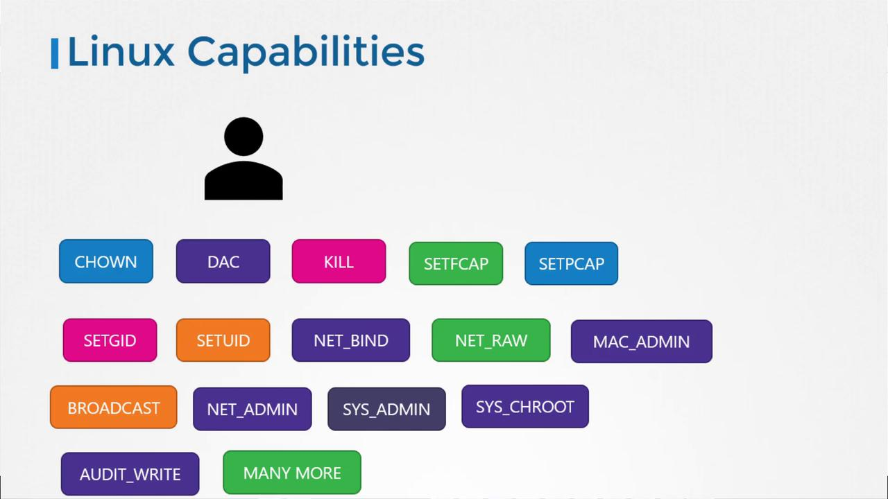
الصورة بتوضح جدول Linux Capabilities ومقارنة بين الـ PID جوه الكونتينر وبرا على الـ
Host.
سياق المستخدم (User Context)
بشكل افتراضي، Docker بيشغل العمليات جوه الكونتينر بصلاحيات الـ Root User. ده
معناه إن العملية والمستخدم الـ Root جوه الكونتينر هما نفسهم المستخدم الـ Root على الـ Host — بس
مع مجموعة محدودة من الصلاحيات.
لو حبيت تغير الـ User ID اللي الكونتينر بيشتغل بيه، تقدر تعمل كده وقت الـ Run:
docker run --user=1000 ubuntu sleep 3600
أو الأحسن، ممكن تحدده في الـ Dockerfile نفسه عشان يبقى إجباري:
FROM ubuntu
USER 1000
💡 ملاحظة
تشغيل الكونتينرات بـ Non-Root User بيقلل مساحة الهجوم. لو الكونتينر اتعرض للاختراق، المهاجم
هيكون عنده صلاحيات أقل بكتير.
إدارة صلاحيات الـ Root (Linux Capabilities)
المستخدم الـ Root على Linux عنده مجموعة كبيرة من الصلاحيات — زي CHOWN,
DAC, KILL, SETFCAP, SETPCAP,
SETGID, SETUID, NET_BIND, NET_RAW,
BROADCAST, SYS_CHROOT, SYS_MODULE, AUDIT,
MAC_ADMIN, NET_ADMIN, SYS_ADMIN, SYS_PTRACE,
SYS_BOOT.
Docker بشكل افتراضي بيشغل الكونتينرات بمجموعة محدودة من الـ Capabilities دي.
يعني الـ Root جوه الكونتينر مش قوي زي الـ Root بتاع الـ Host.
لو محتاج تزود Capability معينة:
docker run --cap-add MAC_ADMIN ubuntu
أو لو عايز تشيل Capability:
docker run --cap-drop KILL ubuntu
أو لو محتاج كل الصلاحيات (خلي بالك، ده خطير!):
docker run --privileged ubuntu
⚠️ تحذير
تشغيل الكونتينرات في الوضع --privileged بيديها وصول كامل لموارد الـ Host. ده
لازم يتجنب في بيئات الـ Production إلا لو ضروري جداً.
الدرس 2
📦 تعريف وبناء وتعديل صور الكونتينرات
💡 ملاحظة
المقال ده بيقدم دليل شامل عن إنشاء وتعديل Docker Images لتحويل التطبيقات لكونتينرات، مع
التركيز على تطبيق Python Flask كمثال عملي.
في الدرس ده هنتعلم إزاي نعمل Containerize لتطبيق — يعني نبنيله Docker Image خاصة بيه. هنمشي خطوة
بخطوة من البداية.
ليه نعمل صورة خاصة؟
ساعات بنحتاج نعمل Containerize لتطبيق بتاعنا، أو بنلاقي إن المكونات أو الخدمات اللي محتاجينها مش
موجودة على Docker Hub. في الحالة دي بنعمل الصورة بنفسنا.
إيه اللي بنعمله لو مفيش Docker؟
لو هنعمل deploy لتطبيق Flask Web يدوي من غير Docker، كنا هنحتاج نعمل الخطوات دي:
نبدأ بنظام تشغيل — زي Ubuntu.
نعمل Update للـ apt repository.
ننزل الـ Dependencies باستخدام apt.
ننزل Python Dependencies باستخدام pip.
ننسخ كود التطبيق في مكان معين (مثلاً /opt).
نشغل السيرفر بأمر flask run.
إنشاء الـ Dockerfile
الـ Dockerfile هو ملف نصي بيوصف الخطوات المطلوبة عشان نبني صورة Docker. كل خطوة بتمثل طبقة
(Layer) في الصورة النهائية.
FROM ubuntu
RUN apt-get update && apt-get -y install python python-setuptools python-dev build-essential python-pip python-mysqldb
RUN pip install flask flask-mysql
COPY . /opt/source-code
ENTRYPOINT FLASK_APP=/opt/source-code/app.py flask run --host=0.0.0.0
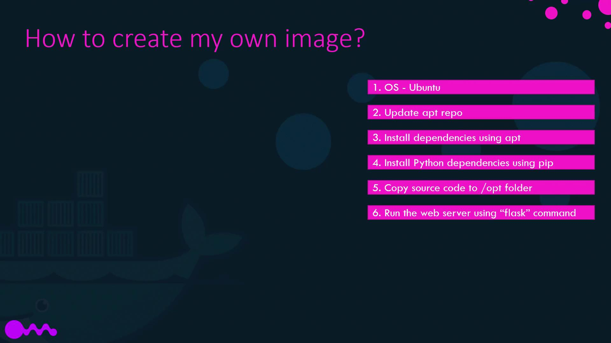
الصورة بتوضح هيكل الـ Dockerfile وطبقاته المختلفة: OS, Dependencies, Source Code,
Entrypoint.
فهم طبقات الصورة (Image Layers)
كل تعليمة في الـ Dockerfile بتعمل Layer جديدة في صورة Docker. فهم الطبقات دي مهم عشان:
Docker بيعمل cache للطبقات. لما بتعيد بناء الصورة، بس الطبقات اللي اتغيرت هي اللي بتتبني من
جديد.
ده بيوفر وقت كبير في عمليات الـ Build اللي بتتكرر كتير.
لو غيرت حاجة في طبقة، كل الطبقات اللي بعدها لازم تتبني تاني.
بناء الصورة باستخدام docker build
docker build -t my-custom-app .
عشان تخلي الصورة متاحة على Docker Hub:
docker push my-custom-app
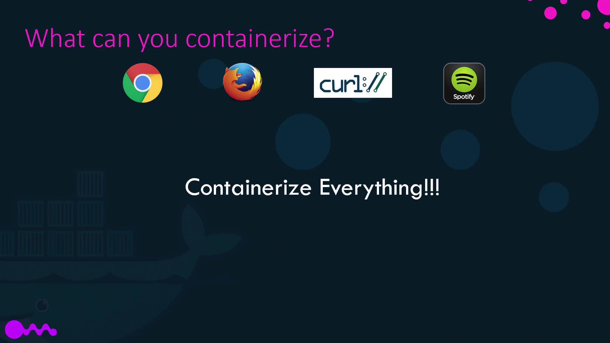
الشعار: Containerize Everything! 🚀
💡 ملاحظة
ممكن تعمل Containerize لأي حاجة تقريباً — مش بس التطبيقات العادية. حتى المتصفحات، أنظمة قواعد
البيانات، والأدوات البسيطة زي curl — كلها ممكن تتعملها Docker Image.
الدرس 3
⌨️ الأوامر والمتغيرات في Docker
💡 ملاحظة
المقال ده بيستكشف أوامر ومتغيرات Docker، وبيشرح بالتفصيل سلوك الكونتينرات، تعليمات الـ
Dockerfile، والفروقات بين CMD و ENTRYPOINT.
في الدرس ده هنفهم إزاي الكونتينرات بتشتغل في Docker. تخيل سيناريو بسيط: بتشغل كونتينر Docker من
صورة Ubuntu:
docker run ubuntu
لو عملت check للكونتينرات الشغالة، مش هتلاقيه:
docker ps
لكن لو عملت list لكل الكونتينرات (بما فيها اللي وقفت):
docker ps -a
هتلاقي إن كونتينر الـ Ubuntu في حالة Exited. ليه؟
ليه الكونتينر بيقف فوراً؟
على عكس الـ Virtual Machines، الكونتينرات مش مصممة إنها تشغل نظام تشغيل كامل. هي
مصممة تشغل task أو process معينة. لما العملية دي تخلص، الكونتينر بيقفل.
الكونتينر بيعيش بس طول ما العملية اللي جواه شغالة.
لو بصينا على الـ Dockerfile بتاع صورة Nginx:
CMD ["nginx"]
وبالنسبة لصورة MySQL:
CMD ["mysqld"]
لكن صورة Ubuntu بتنتهي بالأمر bash. الـ Bash هو Shell ومش عملية حقيقية — هو بيستنى
input من Terminal. ولما Docker بيلاقي إن مفيش Terminal متوصل، bash بيقفل والكونتينر
كمان بيقفل.
تغيير الأمر الافتراضي
ممكن تعمل Override للأمر الافتراضي بإنك تضيف الأمر في آخر سطر الـ docker run:
docker run ubuntu sleep 5
ده هيخلي الكونتينر ينام 5 ثواني وبعدين يقفل.
إنشاء صورة جديدة بأمر مختلف
لو عايز تخلي الكونتينر دايماً ينام 5 ثواني من غير ما تكتب الأمر كل مرة، ممكن تعمل Dockerfile
جديد:
FROM ubuntu
CMD sleep 5
أو بصيغة JSON Array (اللي هي الأفضل):
FROM ubuntu
CMD ["sleep", "5"]
⚠️ تحذير
لما تستخدم صيغة الـ JSON Array، لازم تفصل الأمر والـ Parameters. يعني
CMD ["sleep", "5"] مش CMD ["sleep 5"].
فهم التعليمة ENTRYPOINT
التعليمة ENTRYPOINT زي CMD بتحدد البرنامج اللي هيشتغل لما الكونتينر
يبدأ. الفرق الرئيسي إن أي Parameters بتيجي من سطر الأوامر بتتضاف على الـ
ENTRYPOINT بدل ما تستبدله.
FROM ubuntu
ENTRYPOINT ["sleep"]
دلوقتي لما تشغله:
docker run ubuntu-sleeper 10
ده هينفذ sleep 10. الرقم 10 اتضاف كـ argument للـ ENTRYPOINT.
لكن إيه اللي هيحصل لو مكتبتش رقم خالص؟
docker run ubuntu-sleeper
هتاخد Error لأن أمر sleep محتاج argument.
الجمع بين ENTRYPOINT و CMD
عشان نحل المشكلة دي، بندي قيمة افتراضية باستخدام CMD مع ENTRYPOINT:
FROM ubuntu
ENTRYPOINT ["sleep"]
CMD ["5"]
كده:
docker run ubuntu-sleeper ➡️ هينفذ sleep 5 (القيمة الافتراضية)
docker run ubuntu-sleeper 10 ➡️ هينفذ sleep 10 (الـ 10 بتبدل الـ
5)
عمل Override للـ ENTRYPOINT
لو محتاج تغير الـ ENTRYPOINT كلياً وقت الـ Run:
docker run --entrypoint sleep2.0 ubuntu-sleeper 10
ده هينفذ sleep2.0 10 بدل sleep 10.
☸️ 2. الأوامر والمتغيرات في Kubernetes
الدرس 4
☸️ الأوامر والمتغيرات في Kubernetes
💡 ملاحظة
الدرس ده بيغطي إزاي تخصص سلوك الكونتينر في Kubernetes عن طريق عمل Override للأوامر والمتغيرات
اللي متعرفة في Docker Images.
أهلاً بيك في الدرس ده عن التعامل مع الأوامر والمتغيرات جوه Kubernetes Pod. في الدليل ده هتتعلم
إزاي تخصص سلوك الكونتينر عن طريق عمل Override للإعدادات الافتراضية اللي متعرفة في الـ Docker
Image بتاعتك. قبل كده بنينا صورة Docker بسيطة اسمها "ubuntu-sleeper" بتخلي التنفيذ يتوقف (ينام)
لعدد معين من الثواني. بشكل افتراضي، لما بتشغل:
docker run ubuntu-sleeper
الكونتينر بينام لمدة 5 ثواني. لكن ممكن تغير السلوك ده لما تدي argument من سطر الأوامر. مثلاً:
docker run --name ubuntu-sleeper ubuntu-sleeper 10
ده هيخلي الكونتينر ينام 10 ثواني.
عمل Override للـ Arguments الافتراضية في تعريف الـ Pod
Kubernetes بيسمحلك تعمل نفس حاجة تمرير الـ Arguments في Docker عن طريق استخدام خانة الـ
args في تعريف الـ Pod. لما بتحدد Arguments إضافية في Kubernetes Pod، بتتقدم كـ
Array.
بص على Template تعريف الـ Pod ده. في المثال اللي تحت، الـ Pod بيشغل كونتينر "ubuntu-sleeper"
وبيعمل Override لمدة النوم الافتراضية عن طريق تحديد الـ args لـ
["10"]:
لما الـ Pod يبدأ، بيعمل كونتينر من الصورة المحددة. خانة الـ args في تعريف Kubernetes
بتعمل Override فعلياً لتعليمة الـ CMD الافتراضية اللي متعرفة في الـ Dockerfile.
💡 ملاحظة
في Kubernetes، تقدر تتحكم في سلوك الكونتينر عند الـ Startup عن طريق تعديل مواصفات الـ Pod.
دايماً تأكد إن صيغة الـ YAML بتاعتك صحيحة عشان تتجنب مشاكل الـ Deployment.
عمل Override للـ Entrypoint
في الـ Dockerfile بتاعنا، عرفنا Entry Point وتعليمة CMD كالتالي:
FROM ubuntu
ENTRYPOINT ["sleep"]
CMD ["5"]
عادةً لما بتشغل الكونتينر، الـ Entry Point sleep بيتجمع مع الـ CMD الافتراضي
5. عشان تعمل Override للـ Entry Point في Docker، بتستخدم الـ
--entrypoint flag، مثلاً:
docker run --name ubuntu-sleeper --entrypoint sleep2.0 ubuntu-sleeper 10
في Kubernetes، بتحقق نفس النتيجة باستخدام خانة الـ command في تعريف الـ Pod.
تحديداً، خانة الـ command بتبدل الـ ENTRYPOINT من الـ Dockerfile، وخانة الـ
args بتستمر في عمل Override لتعليمة الـ CMD. تحت مثال بيوضح إزاي تحدد الخانتين:
رغم إن الملف شكله مظبوط، Kubernetes ممكن يرجعلك Error زي ده:
⚠️ خطأ شائع
"cannot unmarshal number into the Go struct field Container.command of type string."
الـ Error ده معناه إن كل عنصر في الـ Command Array لازم يكون String. تأكد إن
"sleep" و "1200" الاتنين محطوطين بين علامتي تنصيص. استخدم الأمر ده
عشان تعمل الـ Pod:
kubectl create -f ubuntu-sleeper-3.yaml
أي خروج عن Quoted Strings هيعمل Error، وده بيأكد أهمية صياغة YAML الصحيحة.
4. تحديث Pod مش قابل للتعديل المباشر
افترض إنك محتاج تحدّث الـ Pod ubuntu-sleeper-3 بتغيير مدة النوم من 1200 ثانية لـ
2000 ثانية. التعديل المباشر على Pod شغال باستخدام أمر زي:
kubectl edit pod ubuntu-sleeper-3
ممكن يعملك Error لأن Kubernetes بيمنع التعديلات على أغلب خانات الـ Pod بعد ما يتعمل.
💡 الطريقة المنصوح بيها
حدّث ملف الـ Pod Manifest المحلي عندك وبعدين اعمل Forced Replace.
رغم إن الـ Dockerfile بيحدد ENTRYPOINT و CMD، الـ Pod Manifest بيعمل
Override للإعدادات دي عن طريق توفير Command جديد. وبالتالي الكونتينر بيبدأ بالـ Arguments
--color green ومش بينفذ أمر الـ Entrypoint الأصلي.
⚠️ مهم
عشان تعمل Override للـ ENTRYPOINT، لازم تستخدم الـ --command flag أو تحدد
Command Array جديد فيه الأمر كامل.
7. الجمع بين Command و Arguments في Pod Manifest
في Directory webapp-color-3 بنستخدم ملفات مشابهة:
Dockerfile2:
FROM python:3.6-alpine
RUN pip install flask
COPY . /opt/
EXPOSE 8080
WORKDIR /opt
ENTRYPOINT ["python", "app.py"]
CMD ["--color", "red"]
هنا الـ Pod Manifest بيحدد بشكل صريح الأمر والمتغيرات. الأمر الفعلي اللي الكونتينر هينفذه هيكون:
python app.py --color pink
ده بيوضح المرونة اللي Kubernetes بيقدمها لما بتجمع بين إعدادات الـ Command والـ Argument.
8. إنشاء Pod مع عمل Override لـ Arguments التطبيق
المهمة الأخيرة هي إنشاء Pod باستخدام صورة kodekloud/webapp-color. الصورة دي بشكل
افتراضي بتعرض خلفية زرقا، بس إحنا عايزين نعمل Override لـ Arguments البداية عشان تعرض أخضر.
تشغيل الـ Pod من غير Override بيستخدم الـ CMD الافتراضي:
kubectl run webapp-green --image=kodekloud/webapp-color
عشان تعمل Override للـ Arguments الافتراضية وتمرر --color=green، افصل Options بتاعة
kubectl عن اللي بتتمرر للكونتينر باستخدام Double Dash (--):
kubectl run webapp-green --image=kodekloud/webapp-color -- --color=green
الأمر ده بيقول لـ Kubernetes يستخدم الـ Entrypoint الافتراضي بتاع الصورة
(python app.py) ويمرر الـ --color=green argument للكونتينر. تأكد إن
الـ Pod شغال بالإعدادات المحدثة وبيظهر خلفية خضرا.
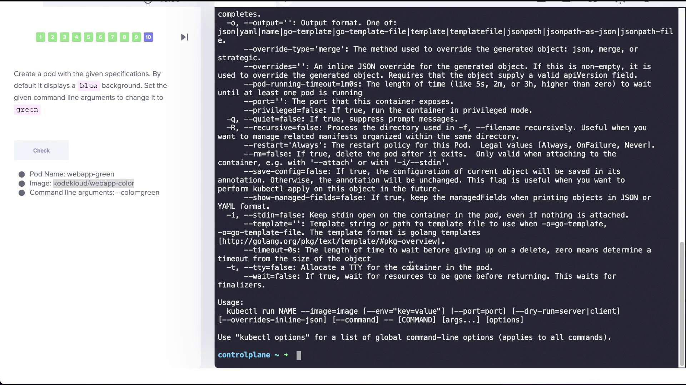
الصورة بتوضح مهمة Kubernetes لإنشاء Pod اسمه "webapp-green" باستخدام صورة
"kodekloud/webapp-color" مع argument سطر الأوامر "--color=green".
الخلاصة
الدرس ده غطى ممارسات مهمة كتيرة في Kubernetes:
فحص أوامر ومتغيرات الـ Pod.
تعريف Pod Manifests بـ Command Arrays.
فهم الفروقات بين ENTRYPOINT و CMD في Dockerfile.
عمل Override للأوامر والمتغيرات الافتراضية وقت التشغيل باستخدام Pod Manifest.
استخدام الـ Double Dash (--) لفصل Options بتاعة kubectl عن
Arguments الكونتينر.
⚙️ 3. الإعدادات والبيانات السرية
الدرس 6
🌱 متغيرات البيئة (Environment Variables)
💡 ملاحظة
المقال ده بيشرح إزاي تضبط Environment Variables في Kubernetes Pods سواء بالتعريف المباشر، أو
باستخدام ConfigMaps و Secrets عشان سيناريوهات الـ Deployment المرنة.
في المقال ده، بنشرح إزاي تضبط متغيرات البيئة في Kubernetes Pod. متغيرات البيئة ممكن تتعرف مباشرة
في مواصفات الـ Pod أو تتدير خارجياً باستخدام ConfigMaps و Secrets، وده بيدي مرونة لسيناريوهات
الـ Deployment المختلفة.
التعريف المباشر لمتغيرات البيئة
لما تعمل Pod، تقدر تحدد متغيرات البيئة مباشرة باستخدام خاصية env في مواصفات
الكونتينر. خاصية env عبارة عن Array كل عنصر فيها بيتعرف بـ name و
value.
مثلاً، لو كنت بتشغل كونتينر Docker بمتغير بيئة زي كده:
docker run -e APP_COLOR=pink simple-webapp-color
تقدر تعرف نفس المتغير في Kubernetes Pod manifest بتاعك كالتالي:
في الـ Configuration دي، متغير البيئة APP_COLOR محطوت قيمته مباشرة بـ
pink.
💡 معلومة
التعيين المباشر طريقة بسيطة ومباشرة، مثالية للسيناريوهات البسيطة أو بيئات التطوير
(Development).
إدارة متغيرات البيئة بـ ConfigMaps و Secrets
عشان إدارة Configuration أكثر ديناميكية، تقدر تخلي بيانات متغيرات البيئة خارجية باستخدام
ConfigMaps أو Secrets. بدل ما تكتب القيمة Hardcoded، بتشاور على القيمة باستخدام خانة
valueFrom. ده بيساعد في فصل الـ Configuration عن كود التطبيق وبيسمح بـ
Configuration أأمن وأسهل في الإدارة.
في الـ Configuration دي، Kubernetes بيجيب قيمة APP_COLOR من ConfigMap اسمه
my-config بدل ما يكون Hardcoded في الـ Manifest.
💡 نصيحة
استخدام ConfigMaps أو Secrets موصى به في بيئات الـ Production لإدارة البيانات الحساسة
وتغييرات الـ Configuration من غير تعديل كود التطبيق.
مقارنة طرق متغيرات البيئة
الطريقة
الوصف
حالة الاستخدام
Direct Assignment
المتغير Hardcoded في
الـ Pod Manifest.
إعدادات بسيطة أو
بيئات تطوير.
ConfigMap Reference
قيمة المتغير بتتاخد
من ConfigMap.
إدارة Configuration
ديناميكية.
Secret Reference
قيمة المتغير بتتاخد
من Secret.
إدارة البيانات
الحساسة بأمان.
الدرس 7
🗺️ خرائط الإعدادات (ConfigMaps)
💡 ملاحظة
الدليل ده بيشرح إدارة بيانات Configuration التطبيق في Kubernetes باستخدام ConfigMaps لتبسيط
إدارة البيانات الخاصة بالبيئة عبر Pods متعددة.
في الدليل ده، هتتعلم إزاي تدير بيانات إعدادات التطبيق في Kubernetes باستخدام ConfigMaps. الـ
ConfigMaps بتساعد تفصل artifacts الإعدادات عن صور الكونتينر، وده بيسهل إدارة البيانات الخاصة بكل
بيئة (Environment-specific) عبر تعريفات Pod متعددة.
نظرة عامة
تقليدياً، متغيرات البيئة كانت بتتعرف جوه ملفات تعريف الـ Pod مباشرة. مثلاً، إعداد Pod بسيط ممكن
يكون شكله كده:
لما تحتاج تدير بيانات Configuration عبر Pods كتير، الـ Hardcoding لمتغيرات البيئة بيتحول بسرعة
لحاجة صعب التعامل معاها. عن طريق استخراج الإعدادات دي في ConfigMap، إنت بتعمل مركزية للـ
Configuration، وده بيسهل الصيانة والتحديث.
💡 مفهوم
الـ ConfigMaps بتخزن بيانات الـ Configuration كـ Key-Value pairs. لما Pod يتعمل، البيانات دي
ممكن تتحقن (Injected) يا إما كمتغيرات بيئة أو كملفات Mounted، وده بيدي تطبيقك وصول سهل
للإعدادات.
في خطوتين رئيسيتين للشغل مع ConfigMaps:
إنشاء الـ ConfigMap.
حقن الـ ConfigMap في الـ Pod.
إنشاء ConfigMap
في طريقتين لإنشاء ConfigMaps: أمرية (Imperative) وتصريحية (Declarative).
الطريقة الأمرية (Imperative Approach)
الطريقة الأمرية بتسمحلك تعمل ConfigMap مباشرة من سطر الأوامر. مثلاً، عشان تعمل ConfigMap اسمه
app-config مع Key-Value pairs لـ APP_COLOR و APP_MODE،
شغل:
في اللاب ده، شوفنا إزاي نغير لون التطبيق من غير ما نلمس كود التطبيق نفسه. كل اللي عملناه إننا
غيرنا القيمة في الـ ConfigMap.
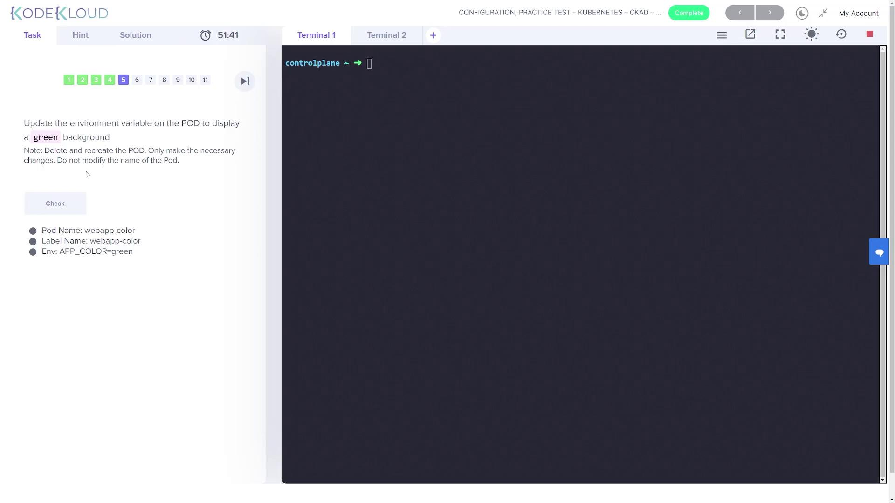
تغيير اللون لـ Green عن طريق تعديل الإعدادات.
💡 تلميح
لو عدلت الـ ConfigMap والـ Pod شغال، التغيير مش هيسمع في الـ Environment Variables غير لما
تعمل Restart للـ Pod (إلا لو كنت عامل Mount كـ Volume، التحديث بيحصل
أوتوماتيك بس بياخد وقت).
الدرس 9
🔒 البيانات السرية (Secrets)
💡 ملاحظة
المقال ده بيشرح إزاي تدير البيانات الحساسة بأمان باستخدام Secrets في Kubernetes.
أهلاً بيك في الدليل الشامل ده عن إدارة Secrets في Kubernetes. في المقال ده، هنشرح إزاي تتعامل
بأمان مع البيانات الحساسة لتطبيقاتك. هنبدأ بمراجعة تطبيق Python Web بيتصل بـ MySQL Database. عند
الاتصال الناجح، التطبيق بيعرض رسالة نجاح. لكن، التطبيق حالياً بيحتوي على قيم Hardcoded لاسم
المضيف (Hostname)، اسم المستخدم، وكلمة المرور. في حين إن نقل بيانات الـ Configuration لـ
ConfigMap مناسب للمعلومات غير الحساسة، هو مش موصى به لكلمات المرور والبيانات الحساسة التانية.
تحت مقتطف من تطبيق Python:
import os
from flask import Flask, render_template
import mysql.connector
app = Flask(__name__)
@app.route("/")
def main():
mysql.connector.connect(host="mysql", database="mysql",
user="root", password="paswrd")
return render_template('hello.html', color=fetchcolor())
if __name__ == "__main__":
app.run(host="0.0.0.0", port="8080")
تخزين البيانات الحساسة: ConfigMaps مقابل Secrets
بينما ConfigMaps خيار ممتاز لتخزين بيانات الـ Configuration كنص عادي (Plain Text)، هي مش مصممة
لحفظ كلمات المرور أو المفاتيح بأمان. هنا بيجي دور Secrets. الـ Kubernetes Secrets بتخزن
المعلومات الحساسة بصيغة مشفرة (Encoded)، وده بيخليها أأمن من استخدام ConfigMaps للأغراض دي.
⚠️ تحذير
تخزين كلمات المرور كنص عادي — حتى في ConfigMap — بيعرضها لمخاطر أمنية محتملة. استخدام Secrets
بيضمن إن البيانات الحساسة بتتعامل بشكل أكثر أماناً.
العمل مع Secrets
زي ConfigMaps، التعامل مع Secrets عادة بينطوي على خطوتين:
إنشاء الـ Secret.
حقن الـ Secret في Pod.
تحت شوية قيم مشفرة (Encoded) كعينة بتقابل إعدادات تطبيقك:
الطريقة التصريحية بتستفيد من ملف تعريف لإنشاء Secret، زي ما ConfigMaps بتتعرف. تعريف Secret
نموذجي بيتضمن API version, kind, metadata, و data fields. لاحظ إن القيم الحساسة لازم دايماً تكون
Encoded بـ base64. تحت مثال لملف تعريف Secret:
apiVersion: v1
kind: Secret
metadata:
name: app-secret
data:
DB_Host: mysql # لازم يكون base64
DB_User: root # لازم يكون base64
DB_Password: paswrd # لازم يكون base64
عشان تعمل Encode لبيانات على Linux host، تقدر تستخدم أمر base64:
Secrets بتكون Encoded بـ base64، مش مشفرة (Encrypted). أي حد معاه وصول
لـ Secret object يقدر يفك البيانات الحساسة.
تجنب وضع ملفات تعريف الـ Secret في Version Control (زي Git) عشان تمنع الكشف العرضي.
بشكل افتراضي، Secrets المتخزنة في etcd مش مشفرة. فكر في تفعيل Encryption at Rest في الـ
Kubernetes Cluster بتاعك.
بالإضافة لكده، فكر في الاستفادة من مزودي إدارة Secrets خارجيين زي Vault، AWS Secrets Manager، أو
Azure Key Vault لتخزين Secrets بأمان خارج etcd.
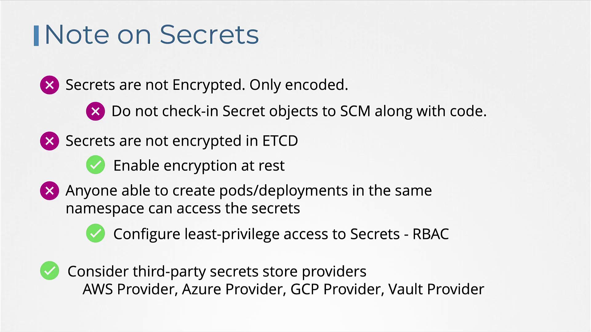
الصورة بتوفر إرشادات عن التعامل مع Secrets، مع التأكيد على التشفير والتحكم في
الوصول.الدرس 10
🧪 الحل — لاب البيانات السرية (اختياري)
اللاب ده بيطبق عملياً على إنشاء واستخدام Secrets. تأكد إنك جربت تعمل Secret وتستخدمه في Pod عشان
تثبت المعلومة.
🔐 4. الأمان والهوية المتقدمة
الدرس 11
🔐 ديمو — تشفير البيانات السرية أثناء التخزين (At Rest)
💡 ملاحظة
الدليل ده بيشرح إزاي تشفر البيانات السرية وهي متخزنة (At Rest) في Kubernetes، وبيغطي الإنشاء،
الفحص، وتفعيل التشفير للمعلومات الحساسة.
في الدليل ده، هتتعلم إزاي تشفر البيانات السرية وهي متخزنة في Kubernetes. بناءً على التوثيق الرسمي لـ Kubernetes، الدرس
ده بيمشيك خلال تخزين Secret objects، فحصهم في etcd، وتفعيل التشفير أثناء التخزين لتأمين البيانات
الحساسة.
في البداية، شغل Kubernetes playground شغال عليه Cluster من Node واحد مبني على Kubernetes و
ContainerD.
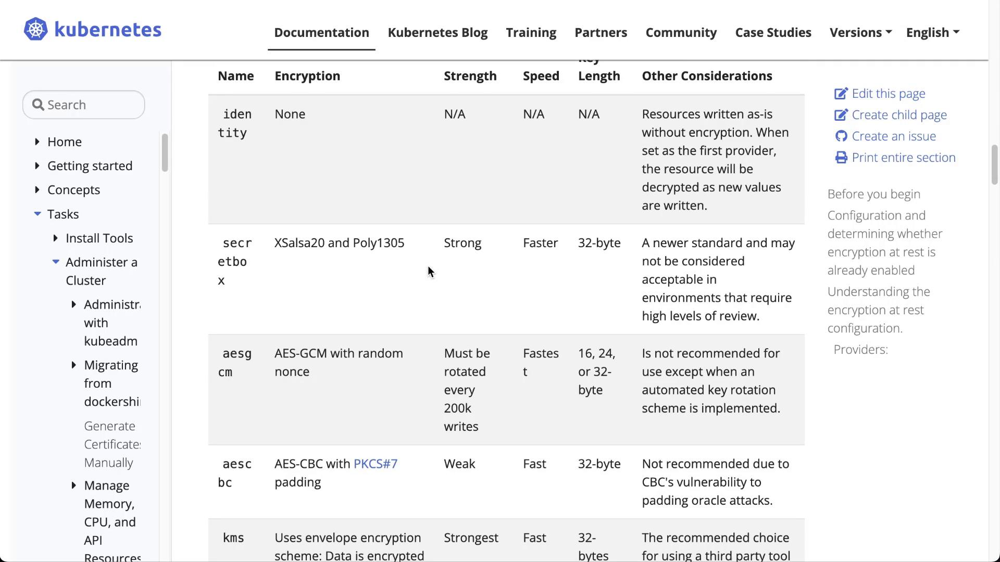
الصورة بتوضح جدول من توثيق Kubernetes بيقارن طرق التشفير، وبيفصل قوتها، سرعتها، طول
المفتاح، واعتبارات تانية.
بمجرد ما الـ Playground يشتغل، افتح الـ Terminal.
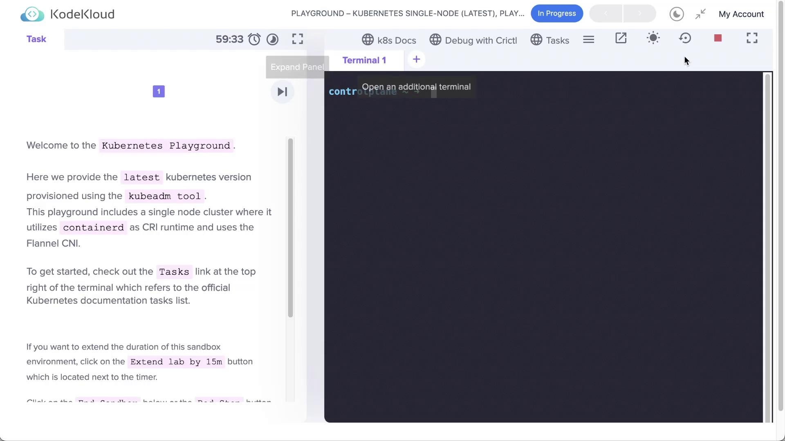
واجهة KodeKloud Kubernetes Playground مع تعليمات و Terminal للتطبيق العملي.
إنشاء Secret Object
الـ Kubernetes Secrets بتساعد تخزن بيانات حساسة زي كلمات المرور، Tokens، أو مفاتيح. في طرق متعددة
لإنشاء Secret object، منها من ملفات، نصوص مباشرة (Literals)، أو ملفات متغيرات بيئة. تحت شوية
أمثلة:
# إنشاء سر جديد اسمه "my-secret" من ملفات في الفولدر "bar"
kubectl create secret generic my-secret --from-file=path/to/bar
# إنشاء سر بمفاتيح محددة من ملفات بدل استخدام أسماء ملفات القرص كمفاتيح
kubectl create secret generic my-secret --from-file=ssh-privatekey=path/to/id_rsa --from-file=ssh-publickey=path/to/id_rsa.pub
# إنشاء سر بـ Key-Value pairs نصية
kubectl create secret generic my-secret --from-literal=key1=supersecret --from-literal=key2=topsecret
# إنشاء سر باستخدام مزيج من ملف وقيمة نصية
kubectl create secret generic my-secret --from-file=ssh-privatekey=path/to/id_rsa --from-literal=passphrase=topsecret
# إنشاء سر من ملفات متغيرات بيئة
kubectl create secret generic my-secret --from-env-file=path/to/foo.env --from-env-file=path/to/bar.env
خيارات إضافية بتشمل:
--allow-missing-template-keys=true: بيتجاهل الأخطاء في القوالب لو في حقول
أو مفاتيح ناقصة.
--append-hash=false: بيضيف Hash للسر لاسمه.
--dry-run: حدد "none", "server", أو "client" عشان تعمل تجربة أو تشوف الـ
Object اللي هيتبعت.
لو فكيت تشفير القيمة الـ base64-encoded، هتحصل على السر كنص واضح:
echo "c3VwZXJzZWNyZXQ=" | base64 --decode
الـ Output:
supersecret
⚠️ تحذير
عشان Secrets بتتخزن كنص واضح Base64 encoded، أي حد عنده وصول لـ etcd يقدر يفكها ويشوفها. تجنب
تخزين ملفات تعريف الـ Secrets في Repositories عامة من غير حماية إضافية.
فحص بيانات الـ Secret في etcd
دلوقتي، خلينا نشوف إزاي Kubernetes بيخزن Secrets في etcd، حيث البيانات بتتحفظ غير مشفرة بشكل
افتراضي. عشان تفحص Secrets المتخزنة، استخدم أداة etcdctl مع API version 3.
ابدأ بالتأكد إن etcd شغال في الـ Cluster بتاعك:
kubectl get pods -n kube-system
المفروض تشوف etcd pod (مثلاً "etcd-controlplane").
النتيجة هتعرض Hex Dump بيوضح خانات السر، بما فيها القيمة الواضحة ("supersecret")، وده بيأكد إن
etcd بيخزن البيانات غير مشفرة.
تفعيل التشفير أثناء التخزين (Encryption at Rest)
عشان تأمن البيانات السرية، فعل التشفير أثناء التخزين في etcd. ابدأ بالتحقق إذا كان التشفير مفعل
بالفعل في الـ Cluster بتاعك. افحص الـ Kube API server للـ flag "encryption-provider-config":
تتأكد إن Secrets متخزنة في etcd كـ base64-encoded plaintext.
تفعل التشفير أثناء التخزين بإنشاء ملف إعدادات تشفير.
تحدث الـ kube-apiserver manifest لدمج إعداد التشفير.
تتأكد إن Secrets الجديدة مشفرة ومحمية في etcd.
تشفير البيانات السرية أثناء التخزين ضروري لحماية المعلومات الحساسة من الوصول غير المصرح به. افتكر
إن التشفير بيطبق بس على التغييرات المستقبلية إلا لو حدثت الأسرار الموجودة.
الدرس 12
🛡️ سياقات الأمان (Security Contexts)
💡 ملاحظة
الدرس ده بيغطي إزاي Kubernetes بيدير سياقات الأمان، وبيسمح بتهيئة معرفات المستخدمين (User
IDs) وصلاحيات Linux للكونتينرات جوه الـ Pods.
أهلاً بيك في الدرس ده عن سياقات الأمان في Kubernetes. أنا ممتاز محمد، وفي الدليل ده، همشيك خلال
إزاي Kubernetes بيدير سياقات الأمان. قبل كده، استكشفنا أمان Docker container، حيث تقدر تحدد User
IDs وتعدل Linux capabilities للكونتينرات بتاعتك. Kubernetes بيوسع القدرة دي، وبيسمحلك تضبط
إعدادات أمان مشابهة.
أمان Docker مقابل Kubernetes
في Docker، ممكن تشغل كونتينرات بخيارات أمان زي دي:
docker run --user=1001 ubuntu sleep 3600
docker run --cap-add MAC_ADMIN ubuntu
في Kubernetes، الكونتينرات بتشتغل جوه Pods. عندك المرونة تضبط سياقات الأمان يا إما على مستوى الـ
Container أو على مستوى الـ Pod. الإعدادات المعرفة على مستوى الـ Pod بتأثر على كل الكونتينرات في
الـ Pod ده. لكن، لو نفس خيارات سياق الأمان محددة للـ Pod وللكونتينرات الفردية، إعدادات مستوى الـ
Container بتعمل Override للي على مستوى الـ Pod.
💡 معلومة
إعدادات الأمان المحددة على مستوى الـ Container ليها أسبقية أعلى من اللي محطوطة على مستوى الـ
Pod. دايماً تأكد من الـ Configuration بتاعتك لضمان تطبيق سياسات الأمان المقصودة.
مثال تعريف Pod
بص على المثال التالي لملف تعريف Pod. في الـ Configuration دي، كونتينر Ubuntu بيبدأ بأمر
sleep. سياق الأمان معرف جوه مواصفات الكونتينر باستخدام خانة
securityContext. هنا، الـ parameter runAsUser بيحدد الـ User ID
للكونتينر، وخيار capabilities بيضيف Linux capabilities محددة:
المثال ده بيوضح إزاي تضبط صلاحيات المستخدم والـ Capabilities في Kubernetes. خد وقتك تدرب على عرض،
ضبط، وحل مشاكل سياق الأمان باستخدام الـ Configuration دي.
الدرس 13
🧪 الحل — سياقات الأمان
💡 ملاحظة
المقال ده بيستكشف سيناريوهات مختلفة لـ Kubernetes security contexts وبيوضح تحديث الـ Pod
configurations لتلبية متطلبات أمان محددة.
في المقال ده، بنستكشف سيناريوهات متنوعة لـ Kubernetes security context وبنوضح إزاي نحدث Pod
configurations لتلبية متطلبات أمان محددة. هتتعلم إزاي تفحص المستخدم الشغال جوه Pods، تحدث الـ
Configurations لتشغيل عمليات كـ Non-Root أو Root مع Capabilities إضافية، وتفهم وراثة Security
Context على مستوى الكونتينر مقابل مستوى الـ Pod.
فحص المستخدم لـ Pod شغال
عشان تعرف مين المستخدم اللي بينفذ عملية الـ sleep جوه Ubuntu sleeper pod، اتبع الخطوات دي:
اعرض الـ Pods: حدد الـ Ubuntu sleeper pod عن طريق عرض كل الـ Pods:
kubectl get pods
ادخل الـ Pod: استخدم kubectl exec للوصول لـ Shell الـ Pod:
kubectl exec -it ubuntu-sleeper -- bash
تأكد من المستخدم جوه الكونتينر: بمجرد ما تدخل، شغل الأمر:
whoami
المفروض الناتج يكون:
root
ده بيأكد إن عملية الـ sleep شغالة كمستخدم Root.
تحديث الـ Pod للتشغيل كـ Non-Root User محدد (UID 1010)
عشان تحدث الـ Ubuntu sleeper pod بحيث العملية تشتغل بـ User ID 1010، اتبع الخطوات دي:
استخرج الـ Pod Configuration الحالي:
kubectl get pod ubuntu-sleeper -o yaml > ubuntu-sleeper.yaml
عدل ملف الـ Configuration: افتح ubuntu-sleeper.yaml ودور على
securityContext للـ Pod، اللي غالباً هيكون فاضي:
securityContext: {}
عدل الـ Security Context: حدث الملف بإضافة خاصية runAsUser بـ
UID 1010:
securityContext:
runAsUser: 1010
طبق الـ Configuration المحدث:
kubectl delete pod ubuntu-sleeper --force
kubectl apply -f ubuntu-sleeper.yaml
بعد تطبيق التغييرات دي، تقدر تتأكد إن الـ Pod شغال:
kubectl get pods
💡 تذكير
على مستوى الكونتينر، إعدادات securityContext بتعمل Override للي متعرفة على مستوى
الـ Pod.
تحديد المستخدم لكونتينرات متعددة في Pod
لما تتعامل مع Pods فيها كونتينرات متعددة، مهم تفهم إزاي سياقات المستخدم بتتورث. بص على تعريف الـ
Pod ده من ملف multi-pod.yaml:
الـ security context لمستوى الـ Pod بيحدد runAsUser بـ 1001.
الـ web container بيعرف securityContext خاص بيه بـ
runAsUser: 1002.
بما إن security context مستوى الكونتينر ليه الأولوية، العمليات في كونتينر web
هتشتغل كمستخدم 1002. كونتينر sidecar، اللي معندوش security
context خاص بيه، هيورث إعداد مستوى الـ Pod، فالعمليات فيه هتشتغل كمستخدم 1001.
تحديث الـ Ubuntu Sleeper Pod للتشغيل كـ Root مع صلاحية SYS_TIME
عشان تعدل الـ Ubuntu sleeper pod بحيث:
العملية تشتغل كمستخدم Root الافتراضي.
الـ Pod يتمنح صلاحية SYS_TIME.
اتبع الخطوات دي:
عدل الـ Pod Configuration: افتح ملف الـ Configuration الحالي، وشيل أي
securityContext على مستوى الـ Pod بيجبر استخدام Non-Root user.
ضيف Capabilities على مستوى الكونتينر: تحت مواصفات الكونتينر المسؤول عن
تشغيل أمر sleep، ضيف securityContext يتضمن الـ Capability المطلوبة:
securityContext:
capabilities:
add: ['SYS_TIME']
بعد حفظ الـ Configuration، امسح الـ Pod الموجود وطبق الجديد:
kubectl delete pod ubuntu-sleeper --force
kubectl apply -f ubuntu-sleeper.yaml
إضافة صلاحية NET_ADMIN
لتعزيز سياق الأمان بإضافة صلاحية NET_ADMIN بالإضافة لـ SYS_TIME:
عدل الـ Security Context للكونتينر: افتح ubuntu-sleeper.yaml
وحدث securityContext عشان يشمل الاتنين:
ده بيكمل الدليل عن تحديث Kubernetes Pod configurations بسياقات أمان وقدرات مختلفة.
الدرس 14
🤖 حسابات الخدمة (Service Accounts)
💡 ملاحظة
المقال ده بيستكشف Kubernetes Service Accounts للتوثيق والتفويض للتفاعلات بين الآلة والـ
Cluster، مع التركيز على إنشائهم وإدارتهم.
أهلاً بيك في الدرس ده عن Kubernetes Service Accounts. في المقال ده، هنستكشف إزاي Service Accounts
بتخدم كعمود فقري للتوثيق (Authentication) والتفويض (Authorization) للتفاعلات بين الآلة والـ
Cluster. بينما هي مرتبطة بشكل وثيق بمواضيع التوثيق، التفويض، والتحكم في الوصول القائم على
الأدوار (RBAC)، الدليل ده بيركز تحديداً على إنشاء وإدارة Service Accounts كجزء من منهج
Kubernetes بتاعنا.
في نوعين أساسيين من الحسابات في Kubernetes:
User Accounts: للمستخدمين البشر زي المديرين والمطورين.
Service Accounts: لمستخدمي الآلة، زي أدوات المراقبة (مثلاً Prometheus) أو
أنظمة CI/CD زي Jenkins.
مثال: تطبيق Kubernetes Dashboard
تخيل تطبيق Dashboard بسيط، "my Kubernetes dashboard"، مبني بـ Python. لما يتعمل له Deploy، بيعمل
Query للـ Kubernetes API عشان يجيب لستة الـ Pods ويعرضهم على صفحة ويب. عشان الاتصال الآمن بـ
Kubernetes API، التطبيق بيستخدم Service Account للتوثيق.
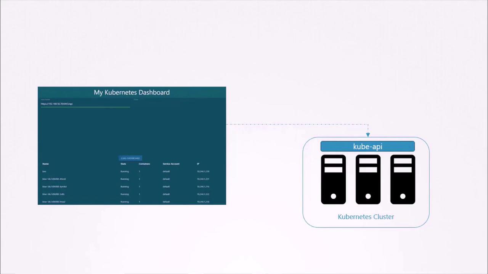
صورة بتوضح واجهة Kubernetes Dashboard متصلة بـ Kubernetes cluster بـ 3 Nodes عبر الـ
kube-api.
إنشاء Service Account
عشان تعمل Service Account لتطبيقك، شغل الأمر التالي. في المثال ده، هنعمل حساب اسمه
dashboard-sa:
kubectl create serviceaccount dashboard-sa
بعد الإنشاء، اعرض كل Service Accounts بـ:
kubectl get serviceaccount
افحص الـ Service Account الجديد مع الـ Token بتاعه بتنفيذ:
kubectl describe serviceaccount dashboard-sa
الأمر ده هيعرض تفاصيل بما فيها الـ Token المرتبط (المتخزن كـ Secret)، والـ Token ده بيستخدم كـ
Bearer authentication token لما تيجي تأكسس الـ Kubernetes API.
التركيب التلقائي للـ Token في Pods (Automatic Token Mounting)
لما تطبيق طرف تالت (Third-party) يتعمل له Deploy على Kubernetes cluster، الـ Service Account
Token بيتعمل له Mount أوتوماتيك كـ Volume جوه الـ Pod. ده بيسمح لتطبيقك يقرا الـ Token من مكان
معروف بدل ما تدخله يدوياً.
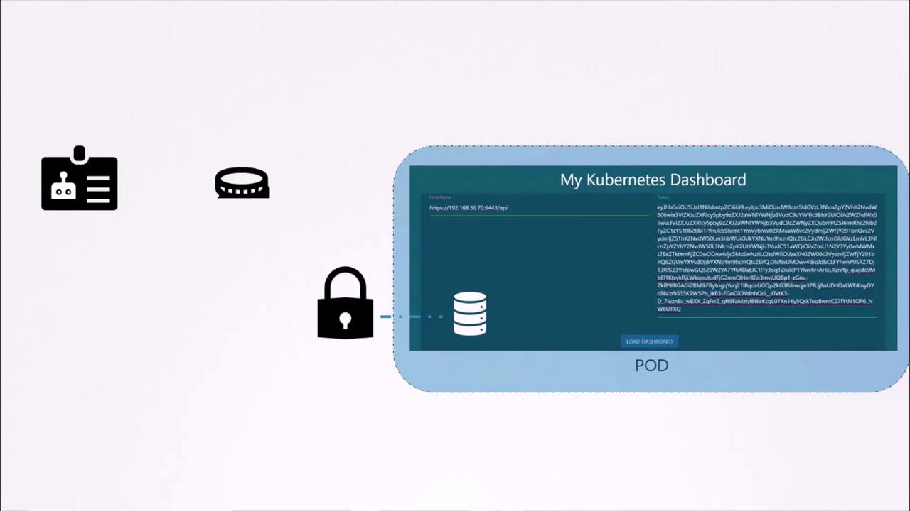
صورة بتوضح Kubernetes Dashboard مع أيقونات بتمثل الأمان والبيانات، بتوضح اتصال آمن
بـ Pod.
بشكل افتراضي، كل Namespace في Kubernetes فيه Service Account اسمه default. لما Pod
يتعمل من غير تحديد Service Account، الـ Kubernetes بيعمل Mount للـ Token بتاع الـ Default
Service Account جوه الـ Pod.
جوه الـ Pod، تقدر تعرض ملفات الـ Secret اللي معمولة Mount:
kubectl exec -it my-kubernetes-dashboard -- ls /var/run/secrets/kubernetes.io/serviceaccount
لو بتفضل تلغي الـ Mounting التلقائي للـ Service Account Token، اضبط خانة
automountServiceAccountToken لـ false.
التغييرات في إصدارات Kubernetes 1.22 و 1.24
بداية من Kubernetes 1.22، حصلت تحسينات على إزاي الـ Service Account tokens بتشتغل. زمان، إنشاء
Service Account كان أوتوماتيك بيعمل Secret بـ Token ملوش صلاحية انتهاء. دلوقتي، الـ Tokens
بتتولد عبر Token Request API وبيتعمل لها Mount كـ Projected Volumes بصلاحية محددة.
مع Kubernetes إصدار 1.24، تحسينات أكتر قللت استخدام الـ Secret-based tokens. دلوقتي، لما Service
Account يتعمل، الـ Token مش بيتولد أوتوماتيك. بدلاً من ذلك، ولد Token صراحة باستخدام الأمر ده لو
محتاجه:
kubectl create token dashboard-sa
الأمر ده بينتج Token محدد بجمهور (Audience-bound) ومحدد بوقت (Time-limited).
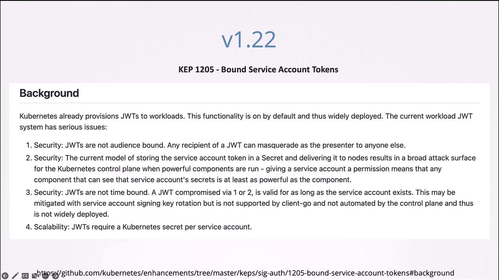
صورة بتناقش KEP 1205 في Kubernetes v1.22، وتسليط الضوء على مشاكل الأمان والتوسع مع
JWTs في Service Account Tokens.
الخلاصة
في الدرس ده اتعلمت إزاي:
تعمل Service Account وتجيب التوكن بتاعه.
تعمل Mount أوتوماتيك للـ Token جوه Pods.
تخصص Pod definitions لاستخدام Service Account محدد.
تفهم التحسينات في نسخ Kubernetes الحديثة بخصوص الـ Bound, Time-limited Tokens.
الدرس 15
🧪 الحل — حسابات الخدمة (Service Accounts)
💡 ملاحظة
الدرس ده بيستكشف فحص وتعديل إعدادات Service Account في Kubernetes، مع التركيز على تفاعل
تطبيقات الـ Dashboard مع الـ Kubernetes API.
في الدرس ده، هنستكشف إزاي نفحص ونعدل إعدادات Service Account في Kubernetes، وهنركز على تفاعل
تطبيق Kubernetes dashboard مع الـ Kubernetes API.
1. التعرف على Service Accounts في الـ Namespace الافتراضي
عشان تبدأ، افحص عدد Service Accounts في الـ Default Namespace بتشغيل:
kubectl get sa
الناتج ممكن يكون زي كده:
controlplane ~ → kubectl get sa
NAME SECRETS AGE
default 0 20m
dev 0 35s
الناتج ده بيوضح حسابين خدمة: default و dev.
2. فحص الـ Secret Token للـ Default Service Account
بعد كده، تأكد إذا كان الـ default service account عنده secret token مرتبط بيه. شغل الأمر ده:
kubectl describe serviceaccount default
افحص قسم "Tokens" في الناتج. في الحالة دي، هو بيشير إن مفيش token مضبوط.
3. فحص الـ Dashboard Deployment
بعد عمل Deploy لتطبيق الـ Dashboard، افحص إعدادات الـ Deployment وتفاصيل الـ Container image.
اعرض الـ Deployments:
kubectl get deployments
وصف الـ Dashboard Deployment:
kubectl describe deployment web-dashboard
ركز على قسم "Pod Template" تحت "Containers". مثال للناتج:
Name: web-dashboard
Namespace: default
CreationTimestamp: Wed, 26 Jul 2023 22:41:47 +0000
Labels:
Annotations: deployment.kubernetes.io/revision: 1
Selector: name=web-dashboard
Replicas: 1 desired | 1 updated | 1 total | 1 available | 0 unavailable
StrategyType: RollingUpdate
MinReadySeconds: 0
RollingUpdateStrategy: 25% max unavailable, 25% max surge
Pod Template:
Labels: name=web-dashboard
Containers:
web-dashboard:
Image: gcr.io/kodekloud/customimage/my-kubernetes-dashboard
Port: 8080/TCP
Host Port: 0/TCP
Environment:
PYTHONUNBUFFERED: 1
Mounts:
Volumes:
Conditions:
Type Status Reason
---- ------ ------
Available True MinimumReplicasAvailable
Progressing True NewReplicaSetAvailable
OldReplicaSets:
NewReplicaSet: web-dashboard-97c9c59f6 (1 replicas created)
Events:
Type Reason Age From Message
في مرحلة ما، هيحصل خطأ:
pods is forbidden: User "system:serviceaccount:default:default" cannot list resource "pods" in API group "" in the namespace "default"
الخطأ ده بيشير إن تطبيق الـ Dashboard بيستخدم الـ Default Service Account، اللي معندوش الصلاحيات
المطلوبة.
4. تحديد Service Account المستخدم بواسطة تطبيق الـ Dashboard
السجلات ورسائل الخطأ بتأكد إن الـ default service account هو المستخدم. عشان تتأكد أي service
account معمول له Mount على الـ dashboard pod، نفذ:
kubectl get pod
kubectl describe pod
جوه وصف الـ Pod، حدد قسم Service Account، المفروض يشير إنه مضبوط على "default".
كمان لاحظ إن الـ credentials معمولة Mount من:
/var/run/secrets/kubernetes.io/serviceaccount from kube-api-access-swjvh (ro)
المسار ده هو المكان اللي الـ dashboard pod بيأكسس منه الـ Service Account Tokens والـ secrets ذات
الصلة.
5. إنشاء Service Account جديد للـ Dashboard
بما إن الـ default service account صلاحياته محدودة، اعمل service account جديد (اسمه
dashboard-sa) بحقوق معززة.
إنشاء الـ Service Account الجديد:
kubectl create serviceaccount dashboard-sa
المفروض تشوف رسالة تأكيد:
serviceaccount/dashboard-sa created
مراجعة إعدادات RBAC:
افحص ملفات إعدادات RBAC (مثلاً dashboard-sa-role-binding.yaml و
pod-reader-role.yaml) الموجودة في مسار /var/rbac/. الملفات دي
بتحتوي على إعدادات الـ Role والـ RoleBinding اللي بتمنح صلاحيات إضافية. لمزيد من التفاصيل عن
RBAC، راجع التوثيق ذي الصلة.
توليد Access Token:
للتوثيق مع تطبيق الـ dashboard، ولد access token لـ dashboard-sa:
انسخ الـ Token والزقه في واجهة الـ Dashboard. بمجرد التوثيق، المفروض تشوف كل الـ Pods
الشغالة في الـ Cluster بتاعك.
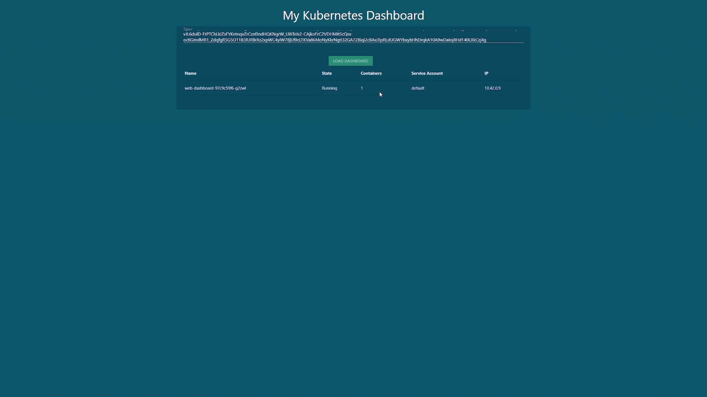
صورة بتوضح Kubernetes Dashboard مع كونتينر شغال اسمه "web-dashboard" وعنوان الـ IP
بتاعه.
6. تحديث الـ Deployment لاستخدام الـ Service Account الجديد
عشان تتخلص من الحاجة لجلب الـ Token يدوياً، حدث الـ Dashboard deployment عشان تستخدم
dashboard-sa أوتوماتيك.
تصدير الـ Deployment Configuration الحالي:
kubectl get deployment web-dashboard -o yaml > dashboard.yaml
تحديث ملف الـ YAML:
افتح dashboard.yaml في محررك المفضل وحدد مواصفات الـ Pod جوه قسم
spec. ضيف خانة serviceAccountName بقيمة "dashboard-sa" تحت الـ
Pod spec. الجزء المحدث المفروض يكون شبه كده:
ممكن تشوف تحذير بخصوص Missing annotation، ده طبيعي وغير ضار.
التحقق من الـ Deployment:
افحص حالة الـ Deployment بتشغيل:
kubectl get deployment
بعد تطبيق التغييرات دي، اعمل Refresh للـ Dashboard application. الـ Pod دلوقتي هيعمل Mount للـ
credentials بتاعت dashboard-sa أوتوماتيك، مما يلغي الحاجة لإدخال الـ Token
يدوياً.
الخلاصة
باتباع الخطوات دي، تكون أنجزت الآتي:
حددت Service Accounts في الـ Namespace الافتراضي.
فحصت الـ Token المرتبط بالـ Default Service Account.
لاحظت إن تطبيق الـ Dashboard كان بيستخدم حساب افتراضي بصلاحيات غير كافية.
عملت Service Account جديد (dashboard-sa) بصلاحيات معززة باستخدام RBAC.
حدثت الـ Dashboard deployment لاستخدام الـ Service Account الجديد أوتوماتيك، مما بسط عملية
التوثيق مع الـ Kubernetes API.
💡 نصيحة
إدارة Service Accounts وإعدادات RBAC بشكل صحيح أمر حيوي للحفاظ على الأمان والكفاءة التشغيلية
في بيئة Kubernetes بتاعتك.
الدرس 16
⚖️ متطلبات الموارد (Resource Requirements)
💡 ملاحظة
الدليل ده بيستكشف تخصيص الموارد في Kubernetes، وتفاصيل أفضل الممارسات لتعريف وتطبيق قيود الـ
CPU والـ Memory في إعداد مكون من 3 Nodes.
فهم متطلبات الموارد أمر حاسم لإدارة Kubernetes Cluster بفعالية. في الدليل ده، بنستكشف إزاي تخصيص
الموارد بيشتغل في Kubernetes setup مكون من 3 Nodes ونوضح أفضل الممارسات لتعريف وتطبيق قيود الـ
CPU والـ Memory.
كل Node في الـ Cluster عنده كمية ثابتة من الـ CPU والـ Memory، وكل Pod بيحصله Scheduling على الـ
Nodes دي بيستهلك جزء من الموارد دي. مثلاً، لو Pod محتاج 2 CPUs ووحدة Memory، الـ Scheduler بيقيم
الموارد المتاحة في كل Node لتحديد أنسب مكان. في السيناريو بتاعنا، الـ Scheduler بيختار Node 2
لأنه بيوفي بطلبات موارد الـ Pod. لو مفيش Nodes عندها موارد كافية، الـ Pod هيفضل في حالة Pending.
لحل مشاكل زي دي، استخدم:
kubectl describe pod
الأمر ده ممكن يكشف مشاكل زي عدم توفر CPU كافي.
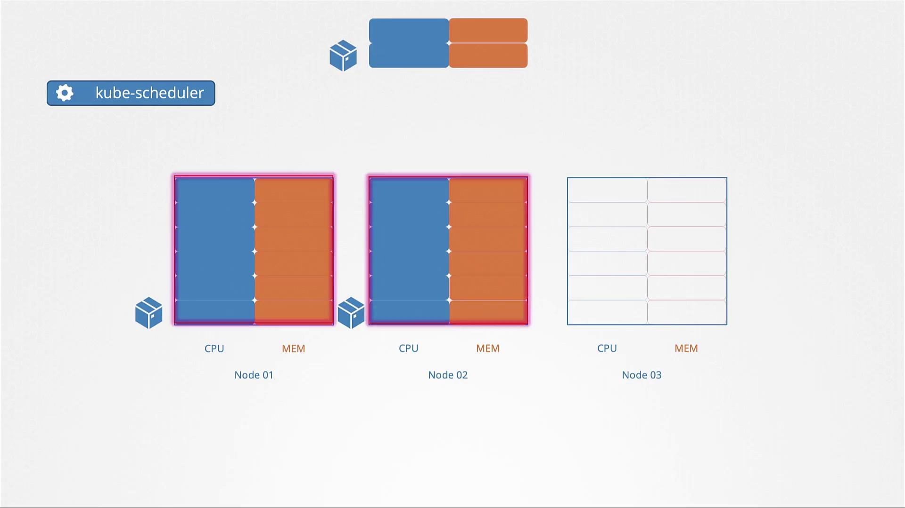
صورة بتوضح عملية Kubernetes Scheduling، وتخصيص الموارد (CPU و Memory) عبر 3 Nodes.
تعريف طلبات الموارد (Resource Requests)
طلب المورد (Resource Request) بيحدد الحد الأدنى من كمية الـ CPU أو الـ Memory اللي الكونتينر
محتاجها عشان يشتغل. بتحديد الطلبات دي في إعدادات الـ Pod، بتضمن إن الـ Node المختار عنده الموارد
الضرورية. مثلاً، إعدادات YAML التالية بتضبط Pod يطلب 4 Gi ذاكرة و 2 CPUs:
الإعداد ده بيضمن إن الـ Node لازم يكون عنده على الأقل الموارد المطلوبة دي متاحة قبل جدولة الـ
Pod.
لاحظ إن قيم الـ CPU ممكن تكون كسرية (مثلاً 0.1 أو 100m، حيث "m" ترمز لـ milli). الـ One CPU بيمثل
One vCPU، مما يجعله مكافئ لـ 1 AWS vCPU، 1 GCP core، 1 Azure core، أو 1 Hyper-thread على منصات
أخرى.
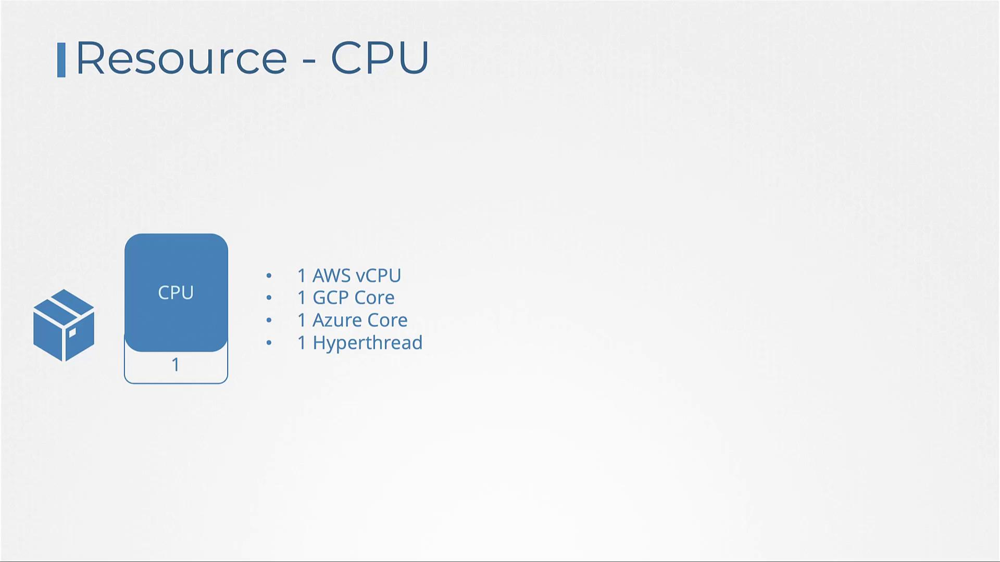
صورة بتوصف مورد الـ CPU، ومساواة 1 CPU بـ 1 vCPU على منصات الكلاود المختلفة.
ضبط حدود الموارد (Resource Limits)
بشكل افتراضي، الكونتينرات مش مقيدة في كمية الموارد اللي ممكن تستهلكها. مثلاً، كونتينر ممكن يبدأ
بـ 1 CPU لكن بعد كده يستهلك كل موارد الـ CPU المتاحة على الـ Node. لتجنب تنافس الموارد بين
الكونتينرات أو العمليات، تقدر تضبط حدود للموارد (Resource Limits).
تحت مثال لـ Pod Configuration بيقيد CPU الكونتينر بـ 2 vCPUs والذاكرة بـ 2 Gi:
بالحدود دي، الكونتينر بيحصله Throttling لو حاول يستخدم أكتر من 2 vCPUs. بالعكس، لو الكونتينر
استهلك ذاكرة أكتر من الحد المسموح باستمرار، هيتم إنهاؤه (Terminated)، وغالباً ده بينتج عنه خطأ
Out Of Memory (OOM).
💡 تحذير
تجاوز حدود الذاكرة ممكن يسبب إنهاء الـ Pod بشكل غير متوقع. دايماً تأكد إن حدود الموارد مضبوطة
بشكل صحيح لتجنب أخطاء OOM.
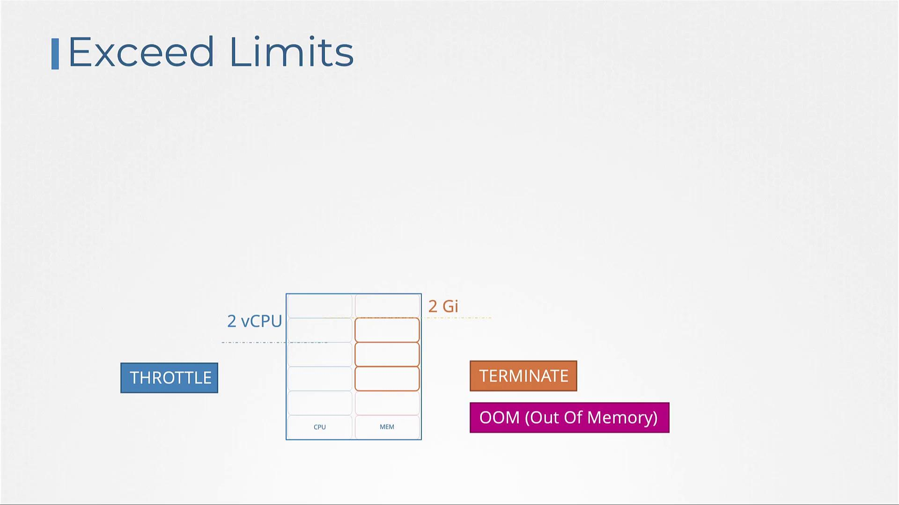
صورة بتوضح تجاوز حدود الموارد، وتظهر CPU Throttling و Memory Termination المؤدي لـ
OOM.
افتكر إن طلبات وحدود الموارد بتتحط لكل كونتينر بشكل فردي. لو Pod بيشغل كونتينرات متعددة، كل واحد
لازم يكون له إعدادات الموارد الخاصة بيه.
إدارة تخصيص الموارد: سيناريوهات رئيسية
في شوية سيناريوهات مختلفة ممكن تحصل بناءً على إزاي طلبات وحدود الموارد مضبوطة:
السيناريو
الوصف
السلوك
لا طلبات ولا حدود
الكونتينر عنده القدرة يستهلك كل الـ CPU أو Memory المتاحة على الـ Node.
ممكن يجوع (Starve) كونتينرات أو تطبيقات تانية.
لا طلبات لكن حدود محددة
Kubernetes بيعامل الحدود المحددة كأنها طلبات الموارد الافتراضية.
كل كونتينر مضمون له الحد المعرف، بدون القدرة على تجاوزه.
الطلبات والحدود مضبوطة
الكونتينرات بتاخد الموارد المطلوبة لكن ممكن تستخدم لحد الحد الأقصى لو في موارد
إضافية متاحة.
بيضمان تخصيص فعال مع السماح بمرونة للاستخدام المفاجئ (Burst).
الطلبات مضبوطة فقط (بدون حدود)
الكونتينر مضمون له الموارد المطلوبة، لكن ممكن يستهلك أي موارد إضافية متاحة من
الـ Node.
خطر الاستهلاك المفرط ممكن يحصل لو مفيش حدود مفروضة.
الاستهلاك المفرط للـ CPU ممكن تخفيفه من خلال الـ Throttling، لكن استخدام الذاكرة مينفعش يتعمل له
Throttle. بدلاً من ذلك، الكونتينرات اللي بتتجاوز حدود الذاكرة بيتم إنهاؤها.
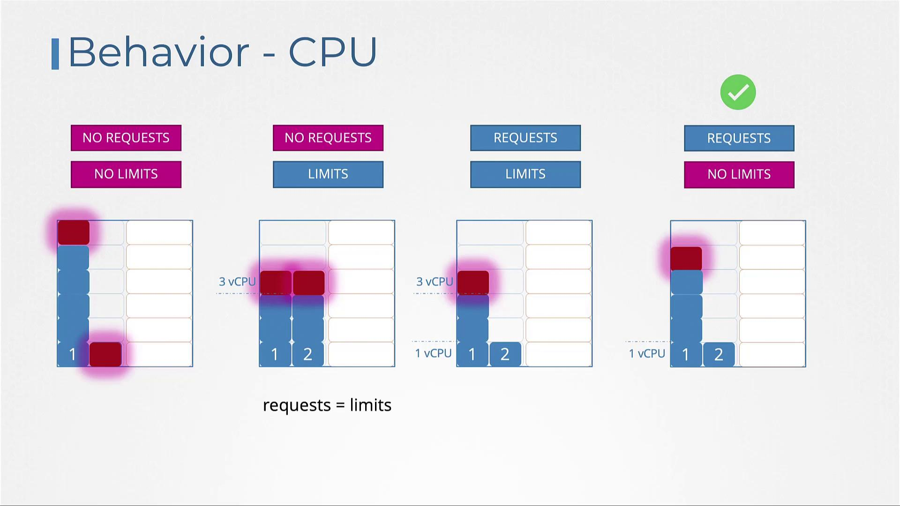
صورة بتوضح سلوك الـ CPU مع إعدادات مختلفة للطلبات والحدود.
إدارة الذاكرة بتتبع أنماط مشابهة:
بدون طلبات أو حدود، الكونتينر ممكن يستخدم كل الذاكرة المتاحة.
تحديد حدود الذاكرة بس بيعني إن Kubernetes هيستخدم الحدود دي كتخصيص أدنى افتراضي.
ضبط الطلبات والحدود مع بعض بيضمن إن الكونتينر ياخد الذاكرة المطلوبة مع وضع سقف لأقصى
استخدام.
تعريف الطلبات بس بيضمن تخصيص ذاكرة مضمون، لكن الاستخدام المفرط ممكن يؤدي لإنهاء الكونتينر،
لأن الذاكرة مينفعش إعادة تخصيصها لحظياً.
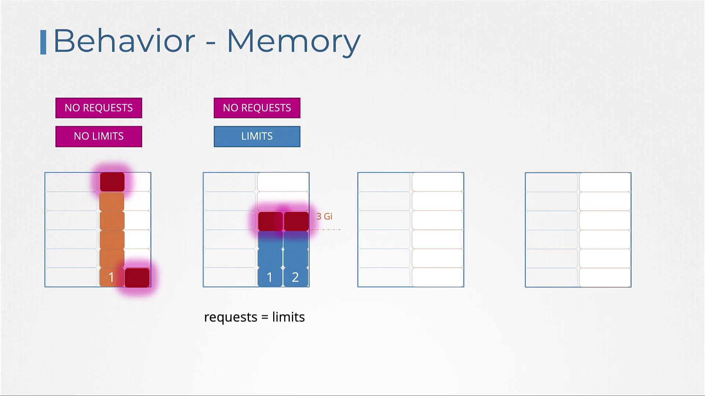
صورة بتوضح سلوك الذاكرة مع سيناريوهات مختلفة.
فرض الافتراضيات باستخدام LimitRanges
بشكل افتراضي، Kubernetes مش بيطبق طلبات أو حدود موارد أوتوماتيك إلا لو محددة صراحة في تعريف الـ
Pod. عشان تفرض إعدادات افتراضية، استخدم موارد LimitRange على مستوى الـ Namespace.
تحت مثال بيطبق قيد افتراضي للـ CPU:
الـ LimitRanges دي بتضمن إن أي كونتينر يتعمل من غير إعدادات موارد محددة ياخد القيم الافتراضية
المعرفة. لاحظ إن التحديثات لـ LimitRange configurations بتأثر بس على الـ Pods الجديدة أو
المحدثة.
استخدام ResourceQuotas
للتحكم في الاستخدام الكلي للموارد جوه Namespace، تقدر تطبق ResourceQuotas. الـ
ResourceQuota object بيحط حدود صارمة على إجمالي استهلاك الـ CPU والـ Memory (الطلبات والاستخدام
الفعلي) عبر كل الـ Pods في الـ Namespace.
مثلاً، ResourceQuota ممكن تقيد الـ Namespace بإجمالي 4 CPUs و 4 Gi ذاكرة في الطلبات، مع فرض
استخدام أقصى 10 CPUs و 10 Gi ذاكرة عبر كل الـ Pods. الآلية دي ضرورية لمنع استهلاك الموارد غير
المنضبط في البيئات متعددة المستخدمين (Multi-tenant environments).
الخلاصة
في الدليل ده، فصلنا إزاي Kubernetes بيدير طلبات وحدود الموارد، لضمان تخصيص الموارد المناسب ومنع
الاستخدام المفرط. غطينا جدولة الـ Pod بناءً على توفر الموارد، أهمية ضبط طلبات وحدود مناسبة،
وإزاي LimitRanges و ResourceQuotas بيساعدوا في الحفاظ على استقرار الـ Cluster ككل.
الدرس 17
🧪 الحل — متطلبات الموارد
💡 ملاحظة
المقال ده بيقدم حلول للتحقق من متطلبات الـ CPU واستكشاف أخطاء الـ Memory وإصلاحها في
Kubernetes Pods.
في الدرس ده، هنمشي خلال حلول لاب حدود الموارد (Resource Limits Lab). اتبع الخطوات تحت للتحقق من
متطلبات الـ CPU للـ "rabbit" pod، استكشاف مشاكل الـ "elephant" pod، وتحديث إعدادات الذاكرة
بتاعته.
السؤال 1: التحقق من متطلبات الـ CPU لـ "rabbit" Pod
في Pod اسمه rabbit معمول له Deploy، ومهمتنا نحدد إعدادات الـ CPU بتاعته. شغل
الأمر التالي لوصف الـ Pod:
kubectl describe pod rabbit
انزل في الناتج لحد ما تلاقي قسم الموارد (Resources). المفروض تشوف تفاصيل زي:
Limits:
cpu: 2
Requests:
cpu: 1
من المعلومات دي، لاحظ إن CPU request مضبوط على 1 بينما الـ
limit هو 2. ده بيشير إن الـ Pod مضبوط إنه يشتغل بـ One CPU.
بعد التحقق، امسح الـ rabbit pod بالأمر:
kubectl delete pod rabbit
السؤال 2: استكشاف مشاكل الـ "elephant" Pod
الـ elephant pod، المعمول له Deploy في الـ default namespace، مش بيوصل لحالة
Running. لتشخيص المشكلة، اوصف الـ Pod باستخدام:
kubectl describe pod elephant
في الناتج، حدد قسم Last State. ممكن تلاحظ ناتج مشابه لده:
حالة OOMKilled بتشير إن الـ Pod اتعمل له Terminate لأنه خلص الذاكرة المتاحة
ليه. الـ Pod عنده حد ذاكرة مضبوط بـ 10Mi، لكن العملية بتاعته محتاجة
15 MB.
السؤال 3: زيادة حد الذاكرة لـ "elephant" Pod
لحل مشكلة OOMKilled، اتبع الخطوات دي لزيادة حد الذاكرة من 10Mi لـ
20Mi:
تصدير الـ Pod Configuration الحالي:
kubectl get pod -o yaml > elephant.yaml
مسح الـ Pod الموجود:
kubectl delete pod elephant
تعديل الـ YAML Configuration:
افتح ملف elephant.yaml، حدد القسم اللي بيحدد حدود الذاكرة وحدثه من
10Mi لـ 20Mi.
تطبيق الإعدادات المحدثة:
kubectl apply -f elephant.yaml
التحقق من حالة الـ Pod:
تأكد إن الـ Pod شغال:
kubectl get pod
NAME READY STATUS RESTARTS AGE
elephant 1/1 Running 0 13s
الحذف النهائي:
بمجرد التحقق، امسح الـ elephant pod زي ما تعليمات اللاب بتحدد:
kubectl delete pod elephant
بعد إكمال الخطوات دي والتأكد إن الـ Pod وصل لحالة Running، تكون نجحت في إكمال لاب حدود الموارد.
الدرس 18
🚫 Taints and Tolerations
💡 ملاحظة
المقال ده بيستكشف إزاي Taints و Tolerations في Kubernetes بتتحكم في وضع الـ Pods على الـ
Nodes.
أهلاً بيك في الدرس ده عن Taints و Tolerations في Kubernetes. أنا ممتاز، وفي المقال ده، هنستكشف
إزاي الـ Pods بيحصلها جدولة على الـ Nodes باستخدام Taints و Tolerations للتحكم في مكان وضع الـ
Pods.
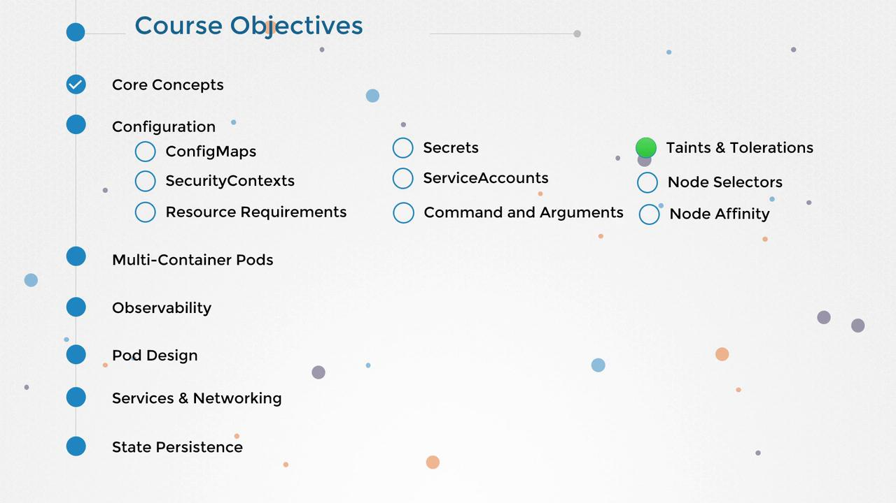
صورة بتسرد أهداف الكورس، بما فيها المفاهيم الأساسية، الإعدادات، وتصميم الـ Pod.
في الدرس ده، تركيزنا هو العلاقة بين الـ Pod والـ Node وإزاي نقيد وضع الـ Pod على Nodes محددة.
بينما Taints و Tolerations ممكن تبان معقدة في الأول، تشبيه يومي ممكن يوضح المفهوم:
تخيل حشرة بتقرب من شخص. عشان تبعد الحشرة، بترش الشخص بمبيد حشري (Repellent). هنا، المبيد بيمثل
Taint محطوط على Node. معظم الحشرات (الـ Pods) بتتنافر ومش بتقدر تقف على الشخص
(الـ Node). لكن، بعض الحشرات ممكن تكون مقاومة للمبيد؛ دي بتمثل الـ Pods اللي تقدر تتحمل الـ
Taint (عندها Toleration). قدرة الـ Pod على تحمل الـ Taint بتقرر إذا كان ينفع
يجدول على Node "موصوم" (Tainted).
في Kubernetes، الـ Node بيشبه الشخص والـ Pods بتشبه الحشرات. الـ Taints بتتحط على Nodes فقط
لتقييد أي Pods ممكن تتجدول عليها؛ هي مش بتخدم كإجراء أمني.
اعتبر Cluster بسيط فيه 3 Worker Nodes — اسمهم one، two، و three — وأربعة Pods مسميين A، B، C، و
D. من غير أي قيود، الـ Kubernetes Scheduler بيوزع الـ Pods دي بالتساوي بين الـ Nodes. دلوقتي،
افترض إنك عايز تخصص node one لتطبيق محدد وتخلي بس الـ Pods المتعلقة بيه تتجدول هناك. الأول، تمنع
كل الـ Pods من النزول على node one بوضع Taint (مثلاً، بمفتاح "app" وقيمة "blue"). بما إن الـ
Pods مش بتيجي بـ Tolerations افتراضياً، هيتم استبعادهم من node one.
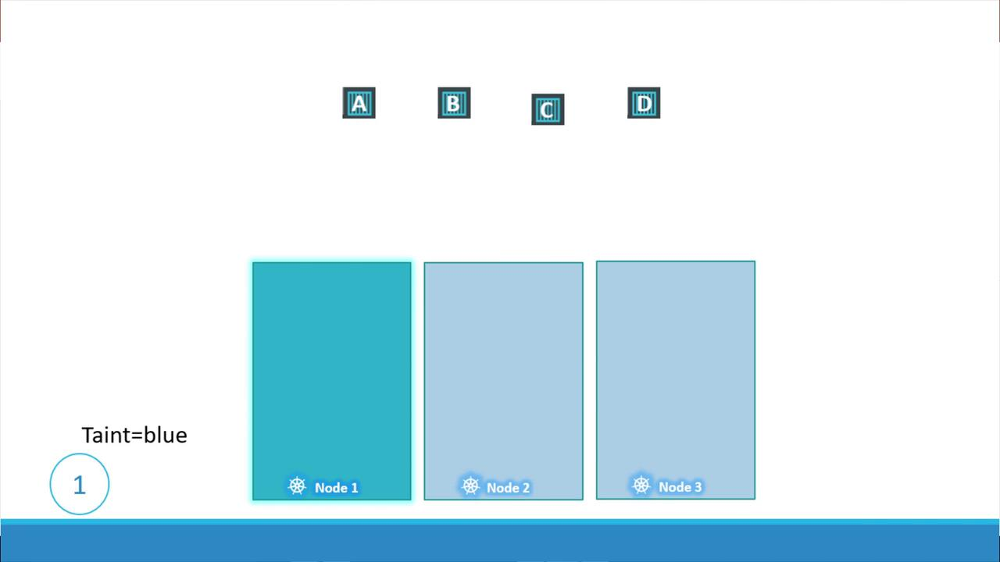
صورة بتوضح رسم بياني لـ 4 Nodes و 3 Kubernetes Nodes، مع تمييز Node 1 باللون الأزرق
كإشارة لـ Taint.
لجدولة Pods معينة بس على node one، ضيف Toleration لتعريف الـ Pod. مثلاً، لو عايز Pod D بس يتجدول
على node one، هتضيف Toleration يطابق الـ Taint (blue) في مواصفاته. مع ضبط Taints و Tolerations
بشكل مناسب، الـ Scheduler هيتجنب node one للـ Pods A، B، و C بينما يسمح لـ Pod D يشتغل عليه.
مثلاً، عشان تعمل Taint لـ node1 بـ Key-Value pair "app=blue" وتأثير NoSchedule، شغل:
kubectl taint nodes node1 app=blue:NoSchedule
تأثير الـ Taint (Taint Effect) بيحدد السلوك للـ Pods اللي مش بتتحمل الـ Taint. في 3 تأثيرات
متاحة:
NoSchedule: الـ Pods اللي معندهاش الـ Toleration المطلوب مش هتتجدول على الـ
Node.
PreferNoSchedule: الـ Scheduler هيتجنب وضع Pod على الـ Node لو أمكن، لكن ده
مش مفروض بصرامة.
NoExecute: الـ Pods الجديدة اللي مش بتتحمل الـ Taint مش هتتجدول، والـ Pods
الموجودة أصلاً من غير الـ Toleration هيتعمل لها Eviction (طرد).
عشان تضيف Toleration لـ Pod، حدث ملف تعريف الـ Pod بإضافة قسم tolerations تحت spec. مثلاً، للسماح
لـ Pod بتحمل Taint بمفتاح "app" وقيمة "blue" بتأثير NoSchedule، ضيف التالي في ملف الـ YAML:
تأكد إن كل قيمة محطوطة بين علامات تنصيص مزدوجة زي ما هو موضح. بمجرد إنشاء أو تحديث الـ Pods بالـ
Tolerations الضرورية، هيتم جدولتها أو طردها بناءً على تأثير الـ Taint وإعدادات الـ Toleration.
تعال نفحص تأثير NoExecute بتفصيل أكتر. تخيل Cluster بـ 3 Nodes بتشغل Workloads
من غير أي Taints. بعدين، لما تخصص node one لتطبيق خاص، بتعمل Taint لـ node one بتأثير NoExecute
وتضيف Toleration بس للـ Pod المخصص (Pod D).
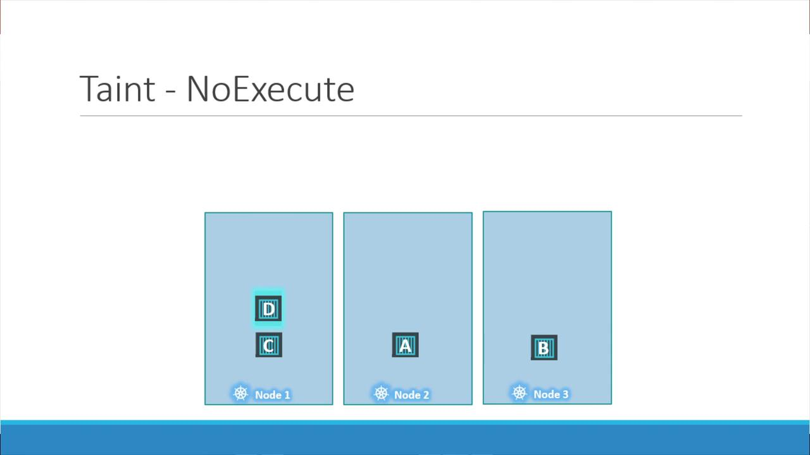
صورة بتوضح Kubernetes nodes labeled 1, 2, 3 مع Pods مختلفة، تحت مفهوم "Taint -
NoExecute".
في السيناريو ده، الـ NoExecute taint بيضمن إن أي Pod على node one مش بيتحمل الـ Taint (مثلاً Pod
C) يطرد، بينما Pod D يفضل موجود لأنه عنده الـ Toleration الضروري.
💡 معلومة
الـ Taints و Tolerations بتتحكم في "أي Pods الـ Node يقبلها". هي "مش بتجبر" الـ Pods تتجدول
على Node معين. حتى لو Pod بيتحمل Taint بتاع Node، من غير قيود إضافية زي Node Affinity، ممكن
لسه يتجدول على Node تاني متاح.
جانب مثير للاهتمام في Taints و Tolerations بيخص الـ Master Nodes. رغم إن Master Nodes تقنياً
قادرة تستضيف Pods، الـ Kubernetes scheduler مش بيحط Application Pods عادية عليها بشكل افتراضي.
لما بتسطب Kubernetes cluster، بيتحط Taint أوتوماتيك على الـ Master node لمنع جدولة أحمال العمل
التطبيقية. تقدر تتأكد من الـ Taint ده بتشغيل:
kubectl describe node kube-master
افحص قسم الـ Taint عشان تشوف إن الـ Master Node مضبوط مش يقبل Pods. بينما السلوك ده ممكن يتعدل،
الأفضل (Best Practice) إنك تفصل Application Workloads عن الـ Master Nodes.
ده بيختم الدرس عن Taints و Tolerations. دلوقتي، تقدر تعزز فهمك بممارسة المفاهيم دي من خلال تمارين
الكود العملية.
الدرس 19
🧪 الحل — Taints and Tolerations
💡 ملاحظة
اتعلم إدارة Taints و Tolerations في Kubernetes، بما في ذلك فحص الـ Nodes، تعديل Taints، ونشر
Pods بـ أو بدون Tolerations.
في الدرس ده، هنتعلم إزاي نشتغل مع Taints و Tolerations في Kubernetes. الدليل بيغطي فحص Nodes الـ
Cluster، فحص وتعديل Taints على Node، نشر Pods بـ ومن غير Tolerations، وأخيراً إزالة Taint من الـ
Control Plane Node.
1. عد الـ Nodes
الأول، حدد العدد الكلي للـ Nodes (شاملة الـ Control Plane) في الـ Cluster بتاعك. شغل الأمر ده
لعرض الـ Nodes:
root@controlplane:~# kubectl get nodes
NAME STATUS ROLES AGE VERSION
controlplane Ready control_plane,master 17m v1.20.0
node01 Ready 16m v1.20.0
زي ما هو موضح، الـ Cluster فيه 2 Nodes: واحد Control Plane وواحد Worker Node (node01).
2. الفحص عن Taints على node01
للتحقق إذا كان في أي Taints على node01، اعرض الـ Nodes تاني، أو افحص node01 بالتفصيل:
root@controlplane:~# kubectl describe node node01
بص على خانة "Taints". لو الخانة بتعرض <none>، يبقى node01 حالياً معليهوش أي
Taints.
3. إضافة Taint لـ node01
دلوقتي، ضيف Taint لـ node01 يمنع الـ Pods اللي معندهاش الـ Toleration اللازم من إنها تتجدول عليه.
استخدم المعاملات دي:
بعد تشغيل الأمر ده، node01 بقى عليه Taint. الـ Pods اللي مش بتتحمل الـ Taint ده مش هتتجدول على
node01.
4. إنشاء الـ "mosquito" Pod (بدون Tolerations)
بعد كده، اعمل Pod اسمه "mosquito" بيستخدم صورة nginx. بما إن الـ Pod ده معندوش Toleration للـ
Taint اللي على node01، هيفضل في حالة Pending:
root@controlplane:~# kubectl run mosquito --image=nginx
تأكد من حالة الـ Pod:
root@controlplane:~# kubectl get pods
NAME READY STATUS RESTARTS AGE
mosquito 0/1 Pending 0 3m37s
افحص تفاصيل الـ Pod لتأكيد مشكلة الجدولة:
root@controlplane:~# kubectl describe pod mosquito
الحدث (Event) هيوضح:
Warning FailedScheduling ... 0/2 nodes are available: 1 node(s) had taint {spray: moreteam:NoSchedule}, that the pod didn't tolerate...
5. إنشاء الـ "bee" Pod بـ Toleration
لجدولة Pod بـ Toleration للـ Taint على node01، اعمل Pod جديد اسمه "bee" بستخدم صورة nginx. بما
إنك مبتعرفش تحدد Tolerations مباشرة بأمر kubectl run، ولد YAML Manifest بـ Dry Run
وعدله.
ولد الـ YAML:
root@controlplane:~# kubectl run bee --image=nginx --dry-run=client -o yaml > bee.yaml
افتح ملف bee.yaml وضيف قسم "tolerations" تحت spec:
تابع عملية الإنشاء وتأكد إن "bee" pod شغال على node01:
root@controlplane:~# kubectl get pods -o wide
NAME READY STATUS RESTARTS AGE IP NODE NOMINATED NODE
bee 1/1 Running 0 36s 10.244.1.2 node01
mosquito 0/1 Pending 0 4m6s
6. إزالة الـ Control Plane Taint
الـ Control Plane node مبدئياً كان عليه Taint بيمنع الـ Regular Pods (زي mosquito) إنها تنزل
عليه. عشان تسمح لـ "mosquito" pod إنه يشتغل، شيل الـ Taint ده.
بمجرد إزالة الـ Taint، الـ "mosquito" pod اللي كان Pending أوتوماتيك هيتجدول على الـ Control
Plane node.
root@controlplane:~# kubectl get pods
NAME READY STATUS RESTARTS AGE
bee 1/1 Running 0 2m37s
mosquito 1/1 Running 0 6m7s
7. الملخص
في الدرس ده:
فحصنا الـ Nodes وعددها.
أضفنا Taint لـ node01.
حاولنا نشغل Pod من غير Toleration وفشل (Pending).
شغلنا Pod بـ Toleration ونجح في النزول على node01.
أزلنا Taint من الـ Control Plane للسماح بجدولة الـ Pods العالقة.
الدرس 20
🎯 مُحددات العقد (Node Selectors)
💡 ملاحظة
المقال ده بيستكشف Kubernetes node selectors لجدولة الـ Pods على Nodes مناسبة في الـ Cluster.
أهلاً بيك في المقال ده عن Kubernetes Node Selectors. في الدليل ده، هنستكشف إزاي Node Selectors
بتساعد تجدول الـ Pods على أنسب Nodes في الـ Cluster بتاعك.
فهم Node Selectors
تخيل عندك Cluster بـ 3 Nodes؛ اتنين منهم صغيرين (Limited Resources) وواحد كبير (Resources عالية).
الـ Cluster بيشغل Workloads متنوعة، لكن أنت عايز تضمن إن الـ Pods اللي بتعمل معالجة بيانات تقيلة
(Data Processing Pods) تشتغل دايماً على الـ Node الكبير. افتراضياً، Kubernetes ممكن يجدول أي Pod
على أي Node متاح، وده ممكن ينتج عنه تشغيل Pod تقيل على Node صغير.
للتغلب على ده، تقدر تقيد الـ Pods إنها تشتغل على Nodes محددة باستخدام Node Selectors. الـ Node
Selector بيسمحلك تعرف Key-Value pair في تعريف الـ Pod بتاعك بيطابق Labels معينة على الـ Nodes.
تعريف Pod باستخدام Node Selectors
تحت مثال لتعريف Pod بـ YAML Format بيستخدم Node Selector لضمان إن الـ Pod يشتغل حصرياً على الـ
Node الكبير:
apiVersion: v1
kind: Pod
metadata:
name: myapp-pod
spec:
containers:
- name: data-processor
image: data-processor
nodeSelector:
size: Large
في المثال ده، خاصية nodeSelector مضافة تحت قسم spec، وبتحدد الـ
Key-Value pair size: Large. الـ Labels دي لازم تكون موجودة على الـ Nodes المقابلة.
تسمية الـ Nodes (Labeling)
قبل إنشاء Pod بـ Node Selector، تأكد إن الـ Nodes بتاعتك متسمية بشكل مناسب. تقدر تسمي Node
باستخدام الأمر:
بعد تسمية الـ Node، اعمل الـ Pod بالـ Node Selector. لما الـ Pod يتعمل، هيتجدول على الـ Node اللي
عليه Label size=Large (في المثال ده، node-1).
kubectl create -f pod-definition.yaml
قيود Node Selectors
بينما Node Selectors فعالة للقيود البسيطة، عندها قيود لما تتعامل مع متطلبات جدولة معقدة. مثلاً،
لو محتاج تجدول Pod على Node عليه Label "Large" أو "Medium" وتستبعد الـ "Small"، الـ Node
Selectors مقدرش تعبر عن المنطق الشرطي ده.
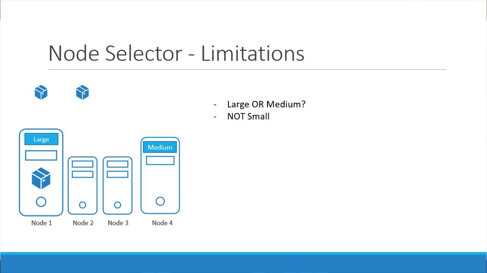
صورة بتوضح قيود الـ Node Selectors، بتظهر Nodes بـ Labels "Large" و "Medium" مع
ملاحظة "Large OR Medium? NOT Small".
💡 نصيحة
لمتطلبات الجدولة المتقدمة، فكر في استخدام Kubernetes Node Affinity و Anti-affinity. المميزات
دي بتقدم مرونة أكبر في تعريف قواعد جدولة معقدة أبعد من Node Selectors البسيطة.
الجدولة المتقدمة: Node Affinity و Anti-affinity
Kubernetes قدمت Node Affinity و Anti-affinity لمعالجة احتياجات الجدولة الأكثر تعقيداً. المميزات
المتقدمة دي بتمكنك من تعريف قواعد بتمتد لشروط متعددة، لضمان إن الـ Pods تتجدول على Nodes بتوفي
متطلبات Workload بتاعك بشكل أفضل.
بفهمك لكل من Node Selectors و Node Affinity، تقدر تحسن استراتيجية جدولة الـ Pods وتضمن إن الـ
Workloads بتاعتك شغالة بكفاءة على أنسب Nodes.
الدرس 21
❤️ توافق العقد (Node Affinity)
💡 ملاحظة
الدليل ده بيستكشف Node Affinity في Kubernetes للتحكم في جدولة الـ Pod على Nodes محددة بقدرات
متقدمة.
أهلاً بيك في الدليل المفصل ده عن Node Affinity في Kubernetes. في الدرس ده، هنستكشف إزاي Node
Affinity بيساعد يتحكم فين الـ Pods تتجدول من خلال ضمان إنها تشتغل على Nodes محددة. الميزة دي
مفيدة جداً لما تحتاج Pod بيعالج بيانات ضخمة يشتغل على Node مخصص.
زمان، المطورين كانوا بيستخدموا Node Selectors لتحقيق التحكم ده. لكن، Node Selectors بتفتقر
للمرونة للتعامل مع تعبيرات الاستعلام المتقدمة، زي الـ Logical "OR" أو "NOT". الـ Node Affinity
بيكسر القيود دي بتقديم قدرات جدولة متقدمة.
استخدام Node Selector
تحت مثال لـ Node Selector بسيط لجدولة Pod على Node عليه Label "Large":
apiVersion: v1
kind: Pod
metadata:
name: myapp-pod
spec:
containers:
- name: data-processor
image: data-processor
nodeSelector:
size: Large
الانتقال لـ Node Affinity
مع Node Affinity، تقدر تحقق نفس متطلبات الجدولة بمرونة أكتر. الـ YAML التالي بيوضح إزاي تحدد
مكافئ الـ Node Affinity:
apiVersion: v1
kind: Pod
metadata:
name: myapp-pod
spec:
containers:
- name: data-processor
image: data-processor
affinity:
nodeAffinity:
requiredDuringSchedulingIgnoredDuringExecution:
nodeSelectorTerms:
- matchExpressions:
- key: size
operator: In
values:
- Large
شرح الإعدادات
تحت spec، تم تقديم خانة affinity مع خانة فرعية اسمها
nodeAffinity.
الخاصية requiredDuringSchedulingIgnoredDuringExecution بتضمن إن الـ Scheduler
يحط الـ Pod على Node بيمتثل للقواعد المحددة. بمجرد ما الـ Pod يشتغل، التعديلات على Node
Labels بيتم تجاهلها.
جوه nodeSelectorTerms (مصفوفة)، بتعرف واحد أو أكتر من Match Expressions. كل
تعبير بيتضمن:
مفتاح (key) زي "size".
مشغل (operator) زي In، بيحدد إزاي قيمة الـ Label بتتقيم.
في الحالة دي، الـ Pod هيتحط على Nodes حيث الـ Label "size" قيمته "Large".
💡 تلميح
لو الـ Deployment بتاعك محتاج مرونة إضافية — مثلاً، السماح بالتشغيل على Node "Large" أو
"Medium" — ببساطة ضيف القيمتين لقائمة الـ values.
استبعاد Nodes باستخدام Node Affinity
عشان تستبعد Nodes بقيمة Label محددة، تقدر تستخدم المشغل NotIn. مثلاً:
- key: size
operator: NotIn
values:
- Small
في الإعداد ده، الـ Pod هيتجدول على Nodes حيث الـ Label "size" مش "Small". في الحالات اللي الـ
Label مش موجود أصلاً، القاعدة دي بتقلل Nodes المرشحة للـ Scheduler.
استخدام المشغل Exists
لما تكون محتاج بس تتحقق من وجود Label، بغض النظر عن قيمته، المشغل Exists مثالي:
- key: size
operator: Exists
المشغل Exists مش بيحتاج مصفوفة values لأنه بيتحقق بس من وجود الـ Label.
أنواع Node Affinity
بعد تعريف قواعد الـ Affinity، الـ Kubernetes Scheduler بيقيم القواعد دي لما يضع الـ Pods على
Nodes. هنا إزاي أنواع الـ Affinity المختلفة بتشتغل:
Required During Scheduling, Ignored During Execution:
أثناء الجدولة: الـ Pod لازم يشتغل على Node بيوفي بقواعد الـ
Affinity؛ لو مفيش تطابق، الـ Pod مش هيتجدول.
أثناء التنفيذ: بمجرد التشغيل، التغييرات على Node Labels مش بتأثر
على الـ Pod.
Preferred During Scheduling, Ignored During Execution:
أثناء الجدولة: الـ Scheduler بيفضل Nodes اللي بتوفي قواعد الـ
Affinity لكن هيجدول الـ Pod على أي Node متاح لو مفيش تطابق مثالي.
أثناء التنفيذ: زي النوع الإلزامي، التغييرات على Node Labels مش
بتأثر على الـ Pod الشغال.
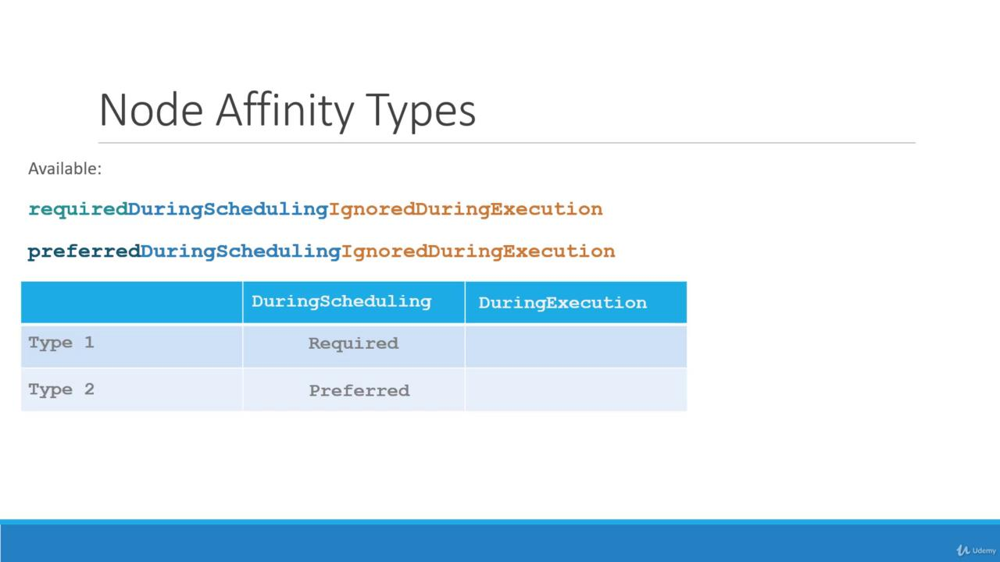
صورة بتشرح أنواع Node Affinity، بتعرض "Required" و "Preferred" للجدولة، مع تجاهل
التنفيذ.
تحسينات مستقبلية
في نقاش مستمر حول فئة جديدة اسمها "Required During Execution". على عكس الإعدادات الحالية، النموذج
ده هيطرد Pod شغال لو الـ Labels بتاعت الـ Node اتغيرت وبقت مش متوافقة مع قواعد الـ Affinity.
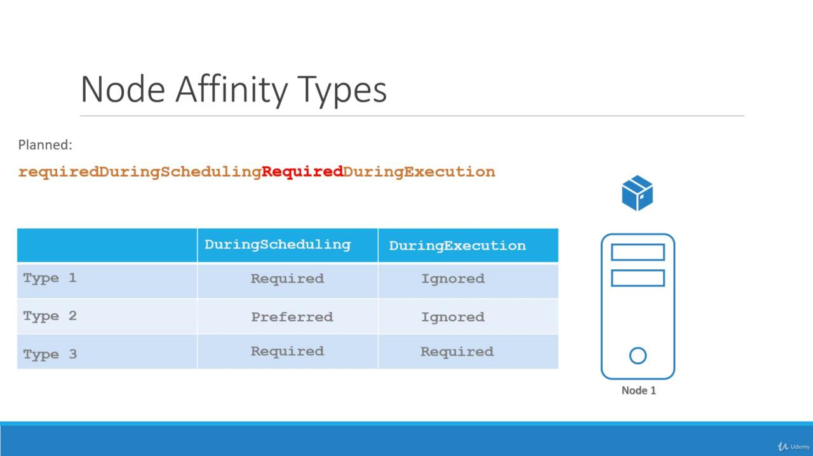
الرسم بيوضح أنواع Node Affinity التلاتة، وبيسلط الضوء إن بينما النماذج الحالية
بتتحاهل تغيير الـ Label بعد الجدولة، نمط "Required During Execution" هيفرض القواعد
ديناميكياً بطرد الـ Pods عند الضرورة.الدرس 22
🧪 الحل — توافق العقد (Node Affinity)
💡 ملاحظة
المقال ده بيوضح إعداد Node Affinity في Kubernetes لإدارة جدولة الـ Pod بناءً على Node Labels.
في الدرس ده، بنوضح اختبار عملي لإعداد Node Affinity في Kubernetes. هتتعلم إزاي تعرف Node Labels،
تعين Label جديد لـ Node، وتضبط Deployments بقواعد Node Affinity تقيد جدولة الـ Pod على Nodes
محددة.
خطوة 1: التعرف على Labels في node01
ابدأ بفحص الـ Labels على node01. شغل الأمر ده للحصول على معلومات مفصلة عن الـ Node:
root@controlplane:~# kubectl describe node node01
من الناتج، لاحظ الـ Label beta.kubernetes.io/arch بقيمة amd64.
خطوة 2: تطبيق Label جديد على node01
بعد كده، عين Label جديد color=blue لـ node01. نفذ الأمر:
خطوة 3: إنشاء الـ "blue" Deployment بـ Node Affinity لـ node01
اعمل Deployment مسمي blue بيستخدم صورة nginx و 3 Replicas:
root@controlplane:~# kubectl create deployment blue --image=nginx --replicas=3
بما إن مفيش Taints، الـ Pods ممكن تتجدول على أي Node. دلوقتي، حدث الـ blue
deployment لفرض Node Affinity. عدل مواصفات الـ Pod لتضمين قاعدة Node Affinity تقيد الـ Pods للـ
Nodes اللي عليها Label color=blue.
استخدم الـ Snippet ده تحت قسم spec.template.spec:
spec:
affinity:
nodeAffinity:
requiredDuringSchedulingIgnoredDuringExecution:
nodeSelectorTerms:
- matchExpressions:
- key: color
operator: In
values:
- blue
بعد الحفظ، تأكد إن الـ Pods متجدولة على node01:
root@controlplane:~# kubectl get pods -o wide
خطوة 4: إنشاء الـ "red" Deployment بـ Node Affinity للـ Control Plane
في الخطوة الجاية، هنعمل Deployment اسمه red بيستخدم صورة nginx و 2 Replicas،
ومضبوط إنه يشتغل حصرياً على الـ Control Plane node باستخدام الـ Label
node-role.kubernetes.io/master.
تأكد إن الـ Pods بتاعت red deployment متجدولة على الـ Control Plane.
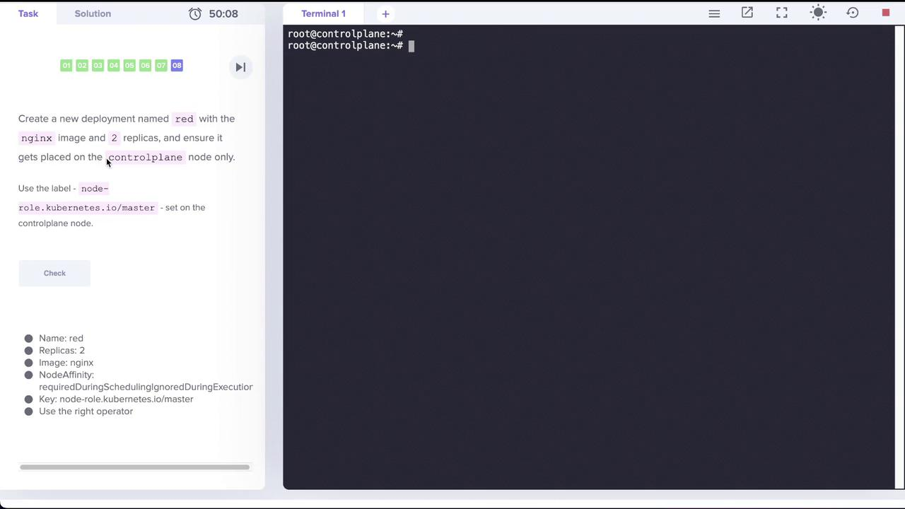
صورة بتوضح مهمة إنشاء Kubernetes Deployment باسم "red" على الـ controlplane node.
الخلاصة
في الدرس ده، اتعلمت إزاي:
تعرف Node Labels.
تطبق Custom Labels للـ Nodes.
تضبط Node Affinity في Deployment لتقييد جدولة الـ Pod.
تولد وتعدل Deployment YAML بـ Dry Run لفرض قواعد Node Affinity.
الدرس 23
⚖️ Taints & Tolerations ضد Node Affinity
💡 ملاحظة
المقال ده بيستكشف الجمع بين Taints، Tolerations، و Node Affinity في Kubernetes لجدولة Pods
حصرية على Nodes مخصصة.
أهلاً بيك في الدرس الشامل ده. في الدليل ده، هنستكشف إزاي ندمج Taints و Tolerations مع Node
Affinity في Kubernetes لضمان إن Pods محددة تشتغل حصرياً على Nodes مخصصة. في مثالنا، هنعتبر
Kubernetes cluster بـ 3 Nodes و 3 Pods، كل واحد مرتبط بلون من تلاتة: أزرق، أحمر، وأخضر. الهدف هو
جدولة الـ Pod الأزرق على الـ Node الأزرق، الـ Pod الأحمر على الـ Node الأحمر، والـ Pod الأخضر
على الـ Node الأخضر، حتى لما الـ Cluster يكون مشترك مع فرق تانية بتشغل Pods مختلفة على Nodes
متنوعة.
نظرة عامة على المشكلة
في بيئة Cluster مشتركة، عايزين نضمن إن:
الـ Nodes المخصصة لينا مش بتشغل Pods من فرق تانية.
الـ Pods بتاعتنا مش بتنزل على Nodes بتخدم أحمال عمل تانية بشكل أساسي.
لحل ده، بنستكشف طريقتين:
النهج الأول: Taints و Tolerations
في الطريقة دي، كل Node بيتعمل له Taint بلونه المناسب (أزرق، أحمر، أو أخضر). بالمقابل، كل Pod
بياخد Toleration بيطابق الـ Taint بتاع الـ Node. ده بيضمن إن:
فقط الـ Pods اللي عندها الـ Toleration المناسب تقدر تتجدول على الـ Node الموصوم (Tainted).
مثلاً، الـ Pod الأخضر هيتجدول بس على الـ Node الأخضر، والـ Pod الأزرق على الـ Node الأزرق. لكن،
بينما Taints و Tolerations تقدر تمنع الـ Pods اللي ناقصها الـ Toleration الصحيح من الجدولة على
الـ Nodes دي، هي "مش بتضمن" إن الـ Pods هتستخدم الـ Nodes المخصصة بشكل تفضيلي. وبالتالي، ممكن
يكون في حالات الـ Pod الأحمر يتجدول على Node من غير الـ Taint و Toleration المقابلين، مما ينتج
عنه وضع Pod غير مرغوب فيه.
النهج الثاني: Node Affinity
Node Affinity بتقدم استراتيجية تانية بالسماح لك بـ:
تسمية (Label) الـ Nodes بألوانها المناسبة (أزرق، أحمر، وأخضر).
تعريف قواعد Node Affinity أو Selectors على الـ Pods لمطابقة الـ Labels دي.
الطريقة دي بتوجه الـ Pods للـ Nodes الصحيحة بناءً على الـ Labels. رغم إن Node Affinity بتساعد في
تحقيق توزيع الـ Pods المطلوب، هي "مش بتمنع" Pods تانية من إنها تتجدول على نفس الـ Nodes، وده
ممكن يؤدي لتعارضات مع Deployments لفرق تانية.
الجمع بين Taints، Tolerations، و Node Affinity
لتخصيص Nodes بالكامل حصرياً لـ Pods محددة، تقدر تستغل نقاط قوة الطريقتين بدمجهم:
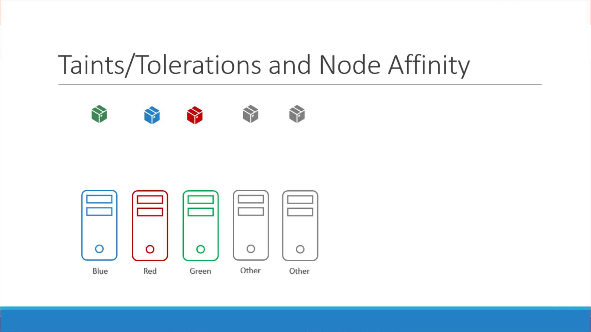
صورة بتوضح "Taints/Tolerations و Node Affinity" مع أيقونات ملونة وتمثيلات سيرفرات
بأسماء Blue, Red, Green, و Other.
أولاً، طبق Taints على الـ Nodes بتاعتك:
ده بيضمن إن الـ Pods من غير الـ Toleration المطابق مش هتتجدول على الـ Nodes دي.
بعد كده، طبق قواعد Node Affinity على الـ Pods بتاعتك:
ده بيضمن إن الـ Pods تتجدول "فقط" على الـ Nodes اللي عليها Color Labels مطابقة.
باستخدام الاستراتيجيتين مع بعض، بتحقق تخصيص Node صارم. الطريقة دي بتضمن إن بس الـ Pods المخصصة
ليك تشتغل على الـ Nodes المستهدفة، وبكده تمنع أي وضع Pod غير مقصود من فرق تانية.
أفكار ختامية
الدرس ده وضح الجمع الفعال بين Taints، Tolerations، و Node Affinity لتحقيق وضع Pod دقيق في
Kubernetes cluster مشترك. بنشجعك تجرب الإعدادات دي في بيئة الـ Cluster بتاعتك لتعميق فهمك
لسياسات جدولة Kubernetes وتحسين ممارسات إدارة الـ Cluster.